Chapter 3 Structure of JDF Nodes and Jobs
This chapter describes the structure of JDF Nodes and how they interrelate to form a Job. As described in Section 2.1.1, “Job Components”, a Node is a construct, encoded as an XML element, that describes a particular part of a JDF Job. Each Node represents an aspect of the Job in terms of:
- 1 A Process necessary to produce the end result, such as imposing, printing or binding;
- 2 A product that contributes to the end result, such as a brochure; or
- 3 Some combination of the previous two.
In short, a Node describes a Product Intent or a Process.
In addition to describing the structure of an individual JDF Node, this chapter examines in what way those Nodes interact to form a coherent Job structure. The visual correlative of this structure resembles a family tree with a single Node describing the entire Job at the top, and a number of Nodes at the bottom that each describes only one specific Process. JDF-supported, leaf-level Processes are described in Chapter 6, “Processes” .
Resource linking specifies the transformation of Input Resources into Output Resources, which in turn might become inputs of other Nodes. It also allows Nodes to share the same Resource. The combination of hierarchical nesting of Nodes and Resource linking allows complex Process networks to be constructed. In a simple case, however, a JDF instance may contain only one Node. The only way that a JDF Node can identify its input and Output Resources is by using ResourceLink Elements.
The hierarchical structure of a JDF Job achieves a functional grouping of Processes. For example, a Job might be split into a prepress Node, a press Node and a finishing Node that contain the respective Process Nodes. Each and every Node in turn contains Attributes that represent various characteristics of that Node. Nodes also contain Subelements of certain types, such as Resources, Process information, customer information, audits, logging information and other JDF Nodes. Some Elements, such as those that deal with customer information, typically occur in the root structure, while other Elements, such as Resources, may occur anywhere in the tree. Where the Elements can reside depends on their type and their usage scope.
This chapter describes the Elements, Subelements and Attributes commonly found in JDF Nodes, and provides the characteristics necessary to understand where each belongs and how it is used. Many of these characteristics are presented in tables, and each of these tables includes the following three columns.
- Name -- Identifies the Element being discussed.
- Data Type -- Refers to the data type, all of which are described in Section 1.5, “Data Structures”. Only the data types element or telem (which is short for text element) are applied to Elements. All other types are Attributes.
- Description -- Provides detail about the Element or Attribute being discussed.
The JDF workflow model is based on a resource/consumer model. JDF Nodes are the consumers that are linked by Input Resources and Output Resources. The ordering of siblings within a Node, however, has no effect on the execution of a Node. All chronological and logical dependencies are specified using ResourceLink Elements, which are defined in Section 3.9, “ResourceLinkPool and ResourceLink” .
3.1 Generic Contents of All Elements
JDF contains a set of generic structures that may occur in any Element of a JDF or JMF document. Some of these are provided as containers for human-readable comments and descriptions and are described below. Others define the usage policy for Attributes and Subelements.
|
The names of the Attributes in this Element that are to have the best effort policy applied when SettingsPolicy is not BestEffort . |
||
|
URL to an external, human-readable description of the Element. Note that CommentURL may be specified within a Comment . |
||
|
Human-readable descriptive name of the JDF Element, (e.g., a descriptive name of a Resource, Process or Product Intent). It is strongly recommended to supply DescriptiveName in all JDF Nodes, Quantity Resource s (for example: Component Resources) and Handling Resource s (for example, ExposedMedia ) for communication from applications to humans in order to reference the Process or Resource. |
||
|
The names of the Attributes in this Element that are to have the MustHonor policy applied when SettingsPolicy is not MustHonor . |
||
|
The names of the Attributes in this Element that are to have the operator intervention policy applied when SettingsPolicy is not OperatorIntervention . If a Device has no operator intervention capabilities, OperatorIntervention is treated as MustHonor . |
||
|
The policy for this Element indicates what happens when unsupported settings, (i.e., Subelements, Attributes or Attribute Values), are present in the Element. Default value is from: parent’s @ SettingsPolicy . If not specified in the parent Element or further superior Elements, the default value is "BestEffort" . BestEffort - Substitute or ignore unsupported Attributes, Attribute Values, default Attribute Values or Elements, and continue processing the Job. MustHonor - Reject the Job when any unsupported Attributes, Attribute Values or Elements are present. OperatorIntervention - Pause Job and query the operator when any unsupported Attributes, Attribute Values or Elements are present. If a Device has no operator intervention capabilities, OperatorIntervention is treated as MustHonor . Note: for additional details on SettingsPolicy , see Section 1.4.3, “Conformance to Settings Policy” . |
||
|
Comment * |
Any human-readable text. The Comment Element is different from an XML comment <!-- XML Comment --> . The JDF comment is meant for display in a user interface whereas the XML comment is used to add developers comments to the underlying XML. Comments must not be nested within Comment Elements. |
|
|
Additional identifiers related to the Element. Creation note: starting with JDF 1.4, GeneralID has been promoted from being only in a Resource to being in any JDF Element, |
||
|
Preview * |
Provides a Preview Resource for thumbnails or other images. MUST not provide multiple Preview Resources with the same Preview /@ PreviewUsage values Creation note: starting with JDF 1.4, Preview has been moved from Table 6-1, “Template for Input Resources”. |
3.1.1 Element: Comment
|
The name of the Agent application that created the Comment . Both the company name and the product name may appear, and should be consistent between versions of the application. |
||
|
The version of the Agent application that created the Comment . The format of the version string may vary from one application to another, but should be consistent for an individual application. |
||
|
Name of the Attribute in the parent Element of the Comment Element that this Comment refers to. Attribute should include the namespace prefix if the Attribute is in a non-JDF namespace. If omitted, the Comment refers to the entire parent Element. Attribute may be used to provide instructions for setting an Attribute or to provide additional human readable information. For instance the name for Media / @Dimensions or the name Media / @Weight may be localized. Note: Attribute may be specified for Attributes of the parent that are not explicitly set in that Element. This allows human readable descriptions of Attribute settings during the setup of a Job. |
||
|
Text that identifies the person who created the Comment . |
||
|
The rectangle that is associated with the comment. The coordinate system of the rectangle is the same as the coordinate system defined in the Path Attribute. |
||
|
Identification that is used to reference the Comment . |
||
|
Human readable language of the Comment . |
||
|
A name that defines the usage of a comment. For example, it could determine whether two comments are intended to fill two distinct fields of a user interface. Description - Human readable description, which is required if the Comment Element is required in a given context, as is the case in the Notification Element (see Table 3-38, “Notification Audit Element” ). DeviceText - Human readable description created by the Device that provides details beyond the value of @ StatusDetails . New in JDF 1.4 Instruction - Message to the operator that contains information regarding the processing of the Job. New in JDF 1.2 JobDescription - Description of the Job. A Comment Element that contains Name = "JobDescription" must be specified only in a JDF Node or CustomerInfo Resource. See also CustomerInfo / @CustomerJobName in Section 7.2.45, “CustomerInfo”. New in JDF 1.2 OperatorText - Message from the operator that contains information regarding the processing of the Job. New in JDF 1.2 Orientation - Description of the orientation of a Physical Resource . TemplateDescription - Description of the Job ticket template. A Comment Element that contains Name = "TemplateDescription" must be specified only in the root JDF Node. New in JDF 1.2 UserText - Message to a user that contains information regarding the processing of the Job. Used in CustomerInfo / CustomerMessage . See Section 3.5, “CustomerInfo” . New in JDF 1.2 |
||
|
Description of the area that the comment is associated with in the coordinate system of the Element where the path resides. In the case of Physical Resource s, Layout Resources and Resources that are related to Layout , Path is defined within the coordinate system of the Resource in which it resides. For example, if the comment is inserted in an ExposedMedia Resource that describes a plate, the path refers to the plate coordinate system. In all other cases, it is defined in the process coordinate system of the JDF Node that contains the Element that the Comment Element containing Path is defined in. Note that there are cases where a coordinate system is not available and therefore defining Path is not recommended , (e.g.: CustomerInfo .) |
||
|
Describes the date and time when the Comment was created. |
||
|
Body of the comment. Note that whitespace is preserved only as generic whitespace in XML. Thus carriage returns, line feeds or tabs may be lost. |
3.1.2 Element: GeneralID
Modification note: starting with JDF 1.4, GeneralID becomes an Element, and is no longer a Resource. See Section 7.2.84, “GeneralID”. GeneralID becomes a child of any Element. See Table 3-1, “Any Element (generic content)”.
GeneralID describes a generic variable. The name or usage of the variable is specified in GeneralID / @IDUsage and the specific value of the variable is specified in GeneralID / @IDValue . The data type is specified in GeneralID / @DataType .
|
Usage of the GeneralID . There are no predefined values in JDF. Values below with "AdsML" prefix are defined in [AdsML] . DeviceProductID - An ID of the resource as defined in the Device namespace. For instance Media catalogs of a press may provide Media identifiers that are different from those defined by the MIS (which are identified with ProductID values). New in JDF 1.4 AdsML:AdBuyer_BookingTransactionID - an ID for the booking transaction that was assigned by a party acting on behalf of the advertiser AdsML:AdSeller_BookingTransactionID - an ID for the booking transaction that was assigned by the publisher or a party acting on its behalf AdsML:AdBuyer_AdMaterialID - an ID for the artwork that was assigned by a party acting on behalf of the advertiser AdsML:AdSeller_AdMaterialID - an ID for the artwork that was assigned by the publisher or a party acting on its behalf. LineID - an ID for PrintTalk which associates a PrintTalk//Pricing/Price[@ LineID = "someValue" ] Element with a JDF Element embedded in PrintTalk, such as PrintTalk//jdf: DeliveryParams / Drop / DropItem [ GeneralID /@ IDUsage = "LineID" and GeneralID /@ IDValue = "someValue" ] . |
||
|
Value of the GeneralID . The data type of the value MUST correspond to GeneralID /@ DataType . |
3.1.3 Structure Diagram
Figure 3-1 below shows the structure of the generic content defined above. Figure 3-1 and other similar diagrams describe JDF structure using the following notation.
- Each box represents an Element, with the Element’s name in the rounded box at the top and its Attributes if any, listed below. A rounded box with a dashed line represents an Abstract Element
- A solid line connects an Element to its Subelement, where the Subelement is at the arrowhead. The cardinality of the Subelement is specified after its name. Cardinality in the line overrides that in the box.
- A dashed line connects an Element to its Abstract Element, where the superclass Element is at the arrowhead.
|
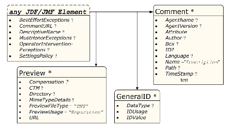
|
3.2 JDF Node
The top-level Element of a JDF instance is a JDF Element. JDF Elements may also be nested within other JDF Elements. The individual JDF Elements are referred to as “Nodes” and Nodes, in turn, contain various Attributes and further Subelements, including nested JDF Nodes.
The following table presents the Attributes and Elements likely to be found in any given JDF Node. Three of the Attributes in Table 3-5, below, must appear in every JDF Node. Although the rest are designated as optional , some optional Attributes become required under circumstances described in the Description column.
The most important of the Attributes is the Type Attribute, which defines the Node type. The value of the Type Attribute defines the Product Intent or Process the JDF Node represents. As is detailed in Section 3.3, “Common Node Types”, all Nodes fall into one of the following four general categories: Process, Process Group, Combined Processes and Product Intent. Each Node is identified as belonging to one of these categories by the value of its Type Attribute, as described in the table below. For example, if Type = "Product" , the Node is a Product Intent Node. Each of these categories is described in greater detail in the sections that follow.
Table 3-5, “JDF Node” contains a fourth column that provides further details about the valid range of the Attribute/Element content, how the content is inherited by descendents (children, grandchildren, etc. ), and where the Attribute/Element can reside in the JDF tree. The heading for this column is “ S ” which is short for “Scope and Position.” The following abbreviations are defined:
|
The content is valid locally within its Node and in all descendent Nodes, unless a descendent contains an identical Attribute that overrides the content. |
||
|
The content is only valid locally, within the Node where the content is defined. |
||
|
The Attribute must be specified only in the Root Node. An exception from the localization only in the Root Node occurs if the spawning and merging mechanism for independent Job tickets is applied as described in Section 4.4, “Spawning and Merging”. All Attributes and Elements listed in subsequent chapters should be considered local unless otherwise noted. |
|
Describes the activation status of the JDF Node. Allows for a range of activity, including deactivation and test running. A child Node inherits the value of the Activation Attribute from its parent. The value of Activation corresponds to the least active value of Activation of any ancestor, including itself. Therefore, if any ancestor has an Activation of Inactive , the Node itself is Inactive . If no ancestor is Inactive but any ancestor is Informative , the Node is Informative unless the Node itself is Inactive . If no ancestor is Informative but any ancestor is TestRun , the Node is TestRun unless the Node itself is Informative . If no ancestor has a value of Inactive or TestRun and any ancestor has a value of TestRunAndGo , the Node has a value of TestRunAndGo unless that Node is Inactive or TestRun and so on. The following table illustrates the actions to be applied to a Node depending on the value of Activation . The values are ordered from least to most active Inactive - The Node and all its descendents must not be executed or tested. This value is set if certain parts of a JDF Job must not be executed or tested. Informative - The JDF ticket is for information only. If a Job is Informative , it must not be processed. Jobs with Activation = "Informative" will generally be sent to an operator console for preview but are still completely under the control of an external Controller. When a JDF ticket is supplied to a customer as proof of execution, its Activation should also be Informative . When a new Job ticket with an identical ID Attribute and a higher Activation is submitted to a Device, that JDF Job ticket must replace the JDF Job ticket that was submitted to the Device with an Activation of Informative . Held - Execution has been held. If a Job is Held , it must not be processed until its Activation is changed to Active . TestRun - The Node requests a test run check by a Controller or a Device. This does not imply that the Node is to be automatically executed when the check is completed. Descendents of a Node that is being test run are not to be considered Active . TestRunAndGo - Similar to TestRun , but requests a subsequent automatic start if the test run has been completed successfully. Active - The default value if not specified in a parent Node - The Node must be executed according to the steps specified in Section 4.2.1, “Determining Executable Nodes” . |
|||||
|
Named category of this Node. Used when Type = "Combined" or Type = "ProcessGroup" to identify the general Node category. This allows Processors to identify the general purpose of a Node without parsing the Types field. For instance, a RIP for final output and RIP for proof Process have identical Types Attribute Values, but have Category = "ProofRIPing" or Category = "RIPing" , respectively. Binding - Binding of a bound product. Cutting - Specifies cutting of a Component . New in JDF 1.3 DigitalPrinting - A RIP and print run on a digital printer that produces final output. FinalImaging - A RIP and image that produces final output that is ready for further processing, (e.g., film or plates). FinalRIPing - RIP Process for generating final output. Folding - Folding of a product. Newsprinting - A press run on a newsprinting Web Press. New in JDF 1.4 PostPress - General postpress. Includes Folding and Binding . Printing - A press run that produces final output. ProofImaging - A RIP that produces proof output. ProofRIPing - RIP Process for generating a proof. The Processes are identical to those in specified for FinalRIPing . PublishingPreparation - Preparing an issue of a newspaper or magazine to be published. New in JDF 1.3 RIPing - General RIP Gray Box. For details, see Section 6.4.32, “RIPing” . New in JDF 1.3 WebPrinting - A press run on a Web Press can produce one or more components as output at the same time. A Web Printing press might be equipped with Prepress and Postpress equipment. Note: the value may also be the name of a Gray Box defined by an ICS document or JDF spec. See the ICS documents for the exact names. |
|||||
|
CIP4 Interoperability Conformance Specification (ICS) Versions that this JDF Node complies with. Value format is: <ICSName>_L<ICSLevel>-<ICSVersion> . Example: MISPRE_L1-1.3 for the MIS to Prepress ICS. If there is a revision to that ICS: " MISPRE_L1-1.3.1 " . See Section 8.5, “Interoperability Conformance Specifications” for more information on ICS documents. |
|||||
|
Unique identifier of a JDF Node. This ID is used to refer to the JDF Node. |
|||||
|
Job identification used by the application that created the JDF Job. Typically, a Job is identified by the internal order number of the MIS system that created the Job. |
|||||
|
Identification of a JDF Node within a Job, used by the application that created the Job. Typically, JobPartID is internal to the MIS system that created the Job and specifies a Process or set of Processes. Note that a product that is produced by a Process or set of Processes is identified by Resource / @ProductID and not by JobPartID . |
|||||
|
Maximum JDF version to be written by an Agent that modifies this Node. If not specified, an Agent that processes the Node may write any version it is capable of writing. See Section 3.13, “JDF Versioning” for a discussion of versioning in JDF. |
|||||
|
NamedFeatures represents an implementation dependent set of parameters for setting up a Device that a Device must apply to the JDF ticket. It is formatted as an ordered list of name value pairs with an even number of entries. The NamedFeatures names supported by the Device may be specified in DeviceCap Elements. See Section 7.3.1, “DeviceCap” . NamedFeatures must be specified only in Process Group Nodes, typically with a Types Attribute supplied, or Product Intent Nodes. See Section 3.3.2.2, “Use of the NamedFeatures Attribute in Product and Process Group Nodes” for details. |
|||||
|
Identification of the project context that this JDF belongs to. Used by the MIS to group a set of JDF Jobs. |
|||||
|
Job identification of a related Job. Used to identify the JobID of a previous run of this Job or Job with very similar settings. It may be used to retrieve additional Job and Device specific settings from a data store. |
|||||
|
Job identification of a related Job Part. Used to identify the JobPartID of a previous run of this Job or Job with very similar settings. It may be used to retrieve additional Job and Device specific settings from a data store. |
|||||
|
Identification of a spawned part of a Job. Typically this is used to map Audit Elements and JMF Messages to a spawned processing step in the workflow. For details on Job spawning, see Section 4.4, “Spawning and Merging” . |
|||||
|
Identifies the status of the Node. Derivation of the Status of a parent Node from the Status of child Nodes is non-trivial and implementation-dependent. Values are from : Table 3-6, “Status Attribute Values”). |
|||||
|
Description of the status phase that provides details beyond the enumerative values given by the Status Attribute. Values include those from : Section C.1, “StatusDetails Supported Strings” . |
|||||
|
Indicates that this JDF Node (or instance) is a template that is used to generate JDF Elements but must not be exchanged as a Job definition. A Device must reject a Job ticket that contains Template = "true" . |
|||||
|
Name or ID that identifies a JDF template. Can be used to differentiate between various templates. If Template = "false" , TemplateID identifies the template that was used to generate this JDF. |
|||||
|
Provides the version of the JDF template. Can be used to differentiate between various template versions. If Template = "false" , TemplateVersion identifies the version of the template that was used to generate this JDF. |
|||||
|
Identifies the type of the Node. Any JDF Process name is a valid type. The Processes that have been predefined are listed in Chapter 6, “Processes” , although the flexibility of JDF allows anyone to create Processes. In addition to these, there are three values which are described in greater detail in the sections that follow. Product - Identifies a Product Intent Node. Values include those from: Chapter 6, “Processes” . |
|||||
|
List of the Type Attributes of the Nodes that are combined to create this Node. This Attribute is required if Type = "Combined" , optional when Type = "ProcessGroup" , and is ignored if Type equals any other value. For details on using Combined Process Nodes, see Section 3.3.3, “Combined Process Nodes”. If the Types Attribute is specified, that JDF Node must not contain child JDF Nodes. For details on using Process Group Nodes, see Section 3.3.2, “Process Group Nodes”. If Type = "ProcessGroup" , the tokens may also be the name of a Gray Box that needs expansion. See Category for more details. Values include those from: Chapter 6, “Processes” . |
|||||
|
Text that identifies the version of the JDF Node. The Version Attribute is required in the JDF Root Node but optional in child Nodes. The version of a JDF Node is defined by the highest version of the JDF Node itself or any child JDF Node or Element or any directly or indirectly linked Resources. For details on JDF versioning see Section 3.13, “JDF Versioning” . |
|||||
|
JDF supports use of XML namespaces. The namespace must be declared in the root JDF Element. For details on using namespaces in XML, see [XMLNS] . For versions 1.1 through 1.4 of JDF, xmlns = "http://www.CIP4.org/JDFSchema_1_1" . |
|||||
|
Informs schema aware validators of the JDF Node type definition that the containing Node is to be validated against. The schema for this version includes definitions for all the JDF Nodes defined in Section 6. If omitted, then a general definition for JDF Nodes will be used. See Section 3.2, “JDF Node” . |
|||||
|
If this Element is present, the current JDF Node has been spawned, and this Element contains a list of all Ancestor Elements prior to spawning. See Section 3.4, “AncestorPool”. |
|||||
|
List of Elements that contains all relevant audit information. Audit Elements are intended to serve the requirements of MIS for evaluation and post calculation. See Section 3.11, “AuditPool and Audit”. |
|||||
|
CustomerInfo ? Deprecated in JDF 1.3 |
Container Element for customer-specific information. See Section 3.5, “CustomerInfo”. In JDF 1.3 and beyond, CustomerInfo is a Resource that is referenced through a CustomerInfoLink in the ResourceLinkPool . |
||||
|
JDF * |
Child JDF Nodes. The nesting of JDF Nodes defines the JDF tree. |
||||
|
NodeInfo ? |
Container Element for Process-specific information such as scheduling and messaging setup. Scheduling affects the planned times when a Node is to be executed. Actual times are saved in the AuditPool . See Section 3.11, “AuditPool and Audit”. In JDF 1.3 and beyond, NodeInfo is a Resource that is referenced through a NodeInfoLink in the ResourceLinkPool . |
||||
|
Container Element for ResourceLink Elements, which describe the input and Output Resources of the Node. See Section 3.9, “ResourceLinkPool and ResourceLink”. |
|||||
|
Container Element for Resources. See Section 3.8, “ResourcePool and its Resource Children”. Note: Resources are local in a ResourcePool but may be referenced from ResourceLink Elements in descendent Nodes. For details see Section 3.9, “ResourceLinkPool and ResourceLink” . |
|||||
|
Container for PartStatus Elements that specify the details of a Node’s Partition dependent Status related Attributes if the Status of the Node is "Pool" . Deprecation note: starting with JDF 1.3, StatusPool / PartStatus / @Status is replaced by NodeInfo / @NodeStatus in the respective Partition of NodeInfo . |
|||||
-- Attribute: Status
|
The Node can be executed, but it has not completed a test run. |
|
|
As indicated by the successful completion of a test run; all ResourceLink Elements are correct; required Resources are available, and the parameters of Resources are valid. The Node is ready to start. |
|
|
An error occurred during the test run. Error information is logged in the Notification Element, which is an optional Subelement of the AuditPool Element described in Section 3.11, “AuditPool and Audit” . |
|
|
The Process represented by this Node is currently being set up. |
|
|
The Process represented by this Node is currently being cleaned up. |
|
|
The Node is spawned in the form of a separate spawned JDF . The status Spawned can only be assigned to the original instance of the spawned JDF . For details, see Section 4.4, “Spawning and Merging”. |
|
|
Execution has been stopped. If a Job is Suspended , running will be resumed later. Unlike Stopped this Status indicates that the Job has been taken off the Device to execute another Job or perform some other action that is not related to this Job. When resumed, the Job may go into Status = "Setup" before changing to InProgress again. Suspended is also used to describe iterations. In an iterative environment, Suspended specifies that at least one iteration cycle has completed but additional iteration cycles MAY still occur. In this use case, StatusDetails SHOULD be set to "IterationPaused" |
|
|
Execution has been stopped. If a Job is Stopped , running can be resumed later. This status can indicate a break, a pause, maintenance or a breakdown -- in short, any pause that does not lead the Job to be aborted. |
|
|
Indicates that the Node has been executed correctly, and is finished. |
|
|
Indicates that the Process executing the Node has been aborted, which means that execution will not be resumed again. |
|
|
Indicates that the Node is processing Partitioned Resources and that the Status varies depending on the Partition Keys. Details are provided in the NodeInfo Resource of the Node. |
|
|
Indicates that the Node processes Partitioned Resources and that the Status varies depending on the Partition Keys. Details are provided in the StatusPool Element of the Node. |
3.2.1 Structure Diagram
Figure 3-2 is a schematic structure of the JDF Node.
|
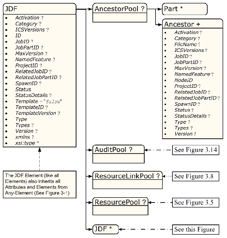
|
3.3 Common Node Types
As was noted in the preceding section, the Type of a Node can fall into four categories. The first is comprised of the specific Processes of the kind delineated in Chapter 6, “Processes” , known simply as Process Nodes. The other categories are made up of three enumerative values of the Type Attribute: ProcessGroup , Combined and Product , which is also known as Product Intent. These three Node types are described in this section.
The figure below, which was also presented as an illustration in Chapter 2, represents a theoretical Job hierarchy comprised of Product Intent Nodes, Process Group Nodes and Nodes that represent individual or Combined Processes. The diagram is divided into three levels to help illustrate the difference between the three kinds of Nodes, but these levels do not dictate the hierarchical nesting mechanism of a Job. Note, however, that an individual Process Node may be the child of a Product Intent Node without first being the child of a Process Group Node. Likewise, a Process Group Node may have child Nodes that are also Process Groups.
|
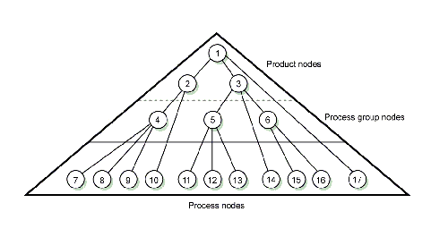
|
3.3.1 Product Intent Nodes
Except in certain specific circumstances, the Agent assigned to begin writing a JDF Job will very likely not know every Process detail needed to produce the desired results. For example, an Agent that is a Job-estimating or Job-submission tool might not know what Devices can execute various steps or even which steps will be needed.
If this is the case, the initiating Agent creates a set of top-level Nodes to specify the Product Intent without providing any of the processing details. Subsequent Agents then add Nodes below these top-level Nodes to provide the processing details needed to fulfill the intent specified.
These top-level Nodes have a Type Attribute Value of Product to indicate that they do not specify any processing, (and are referred to as “Product Intent Nodes”.) All processing needed to produce the products described in these Nodes must be specified in Process Nodes, which exist lower in the Job hierarchy.
Product Intent Nodes include Intent Resource s that describe the end results the customer is requesting. The Intent Resource s that have already been defined for JDF are easily recognizable, as they contain the word “intent” in their titles. Examples include ColorIntent and FoldingIntent . All Intent Resource s share a set of common Subelements, which are described in Section 7.1.1, “Span Subelements of an Intent Resource”. These Resources do not attempt to define the processing needed to achieve the desired results; instead they provide a forum to define a range of acceptable possibilities for executing a Job.
Each Product Intent Node should contain at most one ResourceLink for one type of Intent Resource . If multiple product parts with different intents are needed, each part has its own Product Intent Node. DeliveryIntent Resources are a notable exception. Specifying multiple DeliveryIntent Resources effectively requests multiple options of a quote. A Product Intent Node produces one or more Component Resources as Output Resources. For more information about Product Intent, see Section 4.1.1, “Product Intent Constructs”.
3.3.2 Process Group Nodes
Intermediate Nodes in the JDF Job hierarchy, (i.e., Nodes 4, 5 and 6 in Figure 3-3), describe groups of Processes. The Type Attribute Value of these kinds of Nodes is ProcessGroup , (and they are referred to as “Process Group Nodes”.) These Nodes are used to describe multiple steps in a Process chain that have common Resources or scheduling data.
Since the Agent writing the Job has the option of grouping Processes in any way that seems logical, custom workflows can be modeled flexibly. Process Group Nodes may contain further Process Group Nodes, individual Process Nodes or a mixture of both Node types. Sequencing of Process Group Nodes should be defined by linking Resources of the appropriate leaves, or if the nature of the interchange Resources is unknown, by linking PlaceHolder Resource s.
The higher the level of the Process Group Nodes within the hierarchy, the larger the number of Processes the group contains. A high level Process Group Node (e.g., prepress, finishing or printing Processes) might include lower level Process Group Nodes that define a set of individual steps which are executed as a group of steps in the individual workflow hierarchy. For example, all steps performed by one designated individual may be grouped in a lower level Process Group Node.
3.3.2.1 Use of the Types Attribute in Process Group Nodes - Gray Boxes
Process Group Nodes may contain an optional @Types Attribute that allows a Controller (e.g., an MIS system) to specify a minimum set of Processes to be executed without specifying the complete list of Processes or the exact structure or grouping of these Processes into individual JDF Nodes. Process Group Nodes that contain a Types Attribute are commonly referred to as Gray Boxes. Additional Processes that are not included in Types may be added during expansion of a Gray Box. A ResourceLink / @CombinedProcessIndex is used to map ResourceLink Elements to JDF / @Types in the ProcessGroup. Process Group Nodes with a non-empty Types Attribute must not be executed. A Device that receives the Process Group Node must define the exact structure of the Process Group Node by executing the following steps until the Types list referenced by the Process Group Node is empty:
Step 1 -- Select at least one of the Process types defined in Types and remove these values from the Types list of values referenced by the Process Group Node.
Step 2 -- Create one new JDF child Node within the ProcessGroup that either:
- Has a Type Attribute matching the removed Types entry value, or
- Is a JDF Node with a Type Attribute Value of "Combined" or "ProcessGroup" that contains the removed Types value or values.
Step 3 -- Link the appropriate Resources that were predefined in the original Process Group Node to the newly created subordinate JDF Node(s). The ResourceLink must either be retained or deleted from the Process Group Node. If it is retained, the Process Group Node must not be executed before the Resource that is linked by that ResourceLink is available. Otherwise, the Process Group Node may be executed, even if the Resource is not available.
Step 4 -- Add missing Types to the subordinate JDF Node where appropriate. For instance, the original Types Attribute list referenced by Process Group Node might have specified "Interpreting Rendering" or simply "RIPing" , but the newly created RIP Node would specify "Interpreting Rendering Trapping Screening" .
Step 5 -- Finalize the newly created subordinate JDF Node by adding any missing Resources and Resource parameters. Note that newly created Resources must not be linked to the Process Group Node but only to the subordinate JDF Node created in this Process.
An Agent must instantiate all of the Processes in the Types Attribute of the Gray Box before releasing the created JDF Nodes for processing and production. The ordering of the Processes in the Types Attribute must be maintained when instantiating the child Nodes. JDF Process Group Nodes that contain both a non-empty Types Attribute and child JDF Nodes are not supported, although a Process Group Node may contain child Process Group Nodes that have non-empty Types Attribute.
3.3.2.2 Use of the NamedFeatures Attribute in Product and Process Group Nodes
ProcessGroup and Product Intent Nodes may contain a NamedFeatures Attribute that allows a Controller (e.g., an MIS system) to define a named set of parameters for Processes that must be executed without defining the details or even the Resources for the individual JDF Nodes. The Agent (e.g., a Prepress Control System) populates the JDF Node with the values implied by NamedFeatures in an implementation-defined manner. This procedure may include the addition of additional JDF Subnodes. The precedence of parameters (Attributes or Elements) is as follows in order of decreasing precedence:
- 1 Explicitly supplied parameters
- 2 Parameters supplied by the Device Agent that are associated with the supplied NamedFeatures Attribute closest to the Process.
- 3 Parameters supplied by the Device Agent that are associated with the supplied NamedFeatures Attribute supplied by the Device Agent at Node levels closer to the root.
An individual NamedFeatures entry is selected by specifying an NMTOKEN pair that matches entries from DeviceCap / FeaturePool / EnumerationState / @Name and DeviceCap / FeaturePool / EnumerationState / @AllowedValueList (see Section 7.3.1, “DeviceCap” ), where the first and all even (0 based) entries define the name of the parameter set name (e.g., “Screening”), and the second and all odd entries (0 based) define the selected parameter set value, (e.g., “ AM_HighRes ”). Multiple NamedFeatures may be selected. Names and values are implementation dependent. Each name must occur only once in the NamedFeatures list.
Use of NamedFeatures is commonly combined with the use of Types in Process Group Nodes as described in Section 3.3.2.1, “Use of the Types Attribute in Process Group Nodes - Gray Boxes” . Types abstractly specifies the set of Processes to execute, whereas NamedFeatures abstractly specifies the set of Resources for the Processes specified in Types .
3.3.2.3 ResourceLink Structure in Process Group Nodes
The contents of the ResourceLinkPool of a Process Group Node define the Resources that must be available for the Process Group Node itself to be executed.
Example 3-1: ResourceLink Structure for a ProcessGroup
The following example shows the ResourceLink structure for a ProcessGroup digital printing with near-line finishing Node. The input Media is Available and the Output Component is of interest to the submitting Controller. The Parameter Resource s are assumed to be supplied by the sub-Controller that executes the Process Group Node. Note the presence of intermediate component links that link the individual Processes. The corresponding ResourcePool Elements and Resource Elements have been omitted for brevity.
< JDF xmlns = "http://www.CIP4.org/JDFSchema_1_1" ID = "J1" Status = "Waiting"
Type = "ProcessGroup" JobPartID = "ID300" Version = "1.4" >
<!-- the ResourceLink Elements in the ProcessGroup define the Input
Resources that are to be available for the ProcessGroup to be
submitted and the Output Resources that are produced by the ProcessGroup
< DigitalPrintingParams ID = "L1" Class = "Parameter" Status = "Available" />
< Media ID = "L2" Class = "Consumable" Status = "Available" />
< RunList ID = "L8" Class = "Parameter" Status = "Available" />
< Component ID = "L3" Class = "Quantity" Status = "Unavailable"
< GatheringParams ID = "L4" Class = "Parameter" Status = "Available" />
< Component ID = "L5" Class = "Quantity" Status = "Unavailable"
< StitchingParams ID = "L6" Class = "Parameter" Status = "Available" />
< Component ID = "L7" Class = "Quantity" Status = "Unavailable"
< MediaLink Usage = "Input" rRef = "L2" />
<!-- gathered output components -->
< ComponentLink Usage = "Output" rRef = "L7" />
< JDF ID = "J2" Status = "Waiting" JobPartID = "ID301" Type = "DigitalPrinting" >
<!-- digital printing parameters -->
< DigitalPrintingParamsLink Usage = "Input" rRef = "L1" />
< MediaLink Usage = "Input" rRef = "L2" />
< RunListLink Usage = "Input" rRef = "L8" />
<!-- printed output components -->
< ComponentLink Usage = "Output" rRef = "L3" />
< JDF ID="J3" Status="Waiting" JobPartID="ID302" Type="Gathering">
< GatheringParamsLink Usage = "Input" rRef = "L4" />
<!-- printed output components -->
< ComponentLink Usage = "Input" rRef = "L3" />
<!-- gathered output components -->
< ComponentLink Usage = "Output" rRef = "L5" />
< JDF ID = "J4" Status = "Waiting" JobPartID = "ID303" Type = "Stitching" >
< StitchingParamsLink Usage = "Input" rRef = "L6" />
<!-- gathered output components -->
< ComponentLink Usage = "Input" rRef = "L5" />
<!-- stitched output components -->
< ComponentLink Usage = "Output" rRef = "L7" />
3.3.3 Combined Process Nodes
The Processes described in Chapter 6, “Processes” define individual workflow steps that are assumed to be executed by a single-purpose Device. Many Devices, however, are able to combine the functionality of multiple single-purpose Devices and execute more than one Process. For example, a digital printer might be able to execute the Interpreting , Rendering and DigitalPrinting Processes. To accommodate such Devices, JDF allows Processes to be grouped within a Node whose Type = "Combined" , (referred to as “Combined Process Nodes”.) Such a Node must also contain a Types Attribute, which in turn contains an ordered list of the Type values of each of Processes that the Node specifies. The ordering of the Process names in the Types Attribute specifies the ordering in which the Processes should be executed. If the final product result would be indistinguishable, the Device may change the execution order of the Processes from that given in the Types Attribute.
Furthermore, ResourceLink Elements in Combined Process Nodes should specify a CombinedProcessIndex Attribute in order to define the subprocess to which the Resource belongs. Combined Process Nodes are leaf Nodes and must not contain further nested JDF Nodes.
A Device with multiple processing capabilities is able to recognize the Combined Process Node as a single unit of work that it can execute. Therefore, all Resources for each of the subtasks that define the Combined Process Node and that are explicitly defined as ResourceLink Elements must be available before the Node can be executed. In addition, all input and Output Resources that are consumed and produced externally by the Process must be specified in the ResourceLinkPool Element of the Node. This includes all required Parameter Resource s as well as the initial Input Resources and final Output Resources. Intermediate Resources that are internally produced and consumed, on the other hand, need not be specified.
In a Combined Process Node, the information defined by the various Resources linked as input to the various subProcesses are logically available to all Processes of the Combined Process Node. In situations where the Parameter Resource of more then one subprocess specifies the mapping of Sheet surface content to media, the subprocess that specifies such a mapping that is defined earliest in the Types Attribute list must be used, and any other mappings specified by any down-stream subprocess Resource must be ignored.
3.3.3.1 Combined Process Nodes with Multiple Processes of the Same Type
A Combined Process Node may contain multiple instances of the same Process type, (e.g., Types = "Cutting Folding Cutting" ). In this case, the ordering and mapping of links Processes is significant -- the parameters of the first Cutting Process are most likely to be different from those of the second Cutting Process. Mapping is accomplished using the CombinedProcessIndex Attribute in the respective ResourceLink .
Example 3-2: Combined Process Node
< JDF xmlns = "http://www.CIP4.org/JDFSchema_1_1" ID = "J1" Status = "Waiting"
Type = "Combined" Types = "Cutting Folding Cutting" JobPartID = "ID345"
<!--Resources (incomplete...) -->
<!-- parameters of the first Cutting Process-->
< CuttingParams Class = "Parameter" ID = "L1" Status = "Available" />
< FoldingParams Class = "Parameter" ID = "L2" Status = "Available" />
<!-- parameters of the second Cutting Process-->
< CuttingParams Class = "Parameter" ID = "L3" Status = "Available" />
< Component Class = "Quantity" ID = "L4" Status = "Available" ComponentType = "Sheet" />
<!-- completed output components -->
< Component Class = "Quantity" ID = "L5" Status = "Unavailable"
<!-- parameters of the first Cutting Process-->
< CuttingParamsLink CombinedProcessIndex = "0" Usage = "Input" rRef = "L1" />
< FoldingParamsLink CombinedProcessIndex = "1" Usage = "Input" rRef = "L2" />
<!-- parameters of the second Cutting Process-->
< CuttingParamsLink CombinedProcessIndex = "2" Usage = "Input" rRef = "L3" />
< ComponentLink Usage = "Input" rRef = "L4" />
<!-- completed output components -->
Example 3-3: ResourceLinkPool for Combined Process Node
The following example of the ResourceLinkPool of a JDF Node describes digital printing with in-line finishing and includes the same Processes as the previous ProcessGroup example. The Node requires the Parameter Resource s and Consumable Resource s of all three Processes as inputs, and produces a completed booklet as output. The intermediate printed Sheets and gathered piles are not declared, since they exist only internally within the Device and cannot be accessed or manipulated by an external Controller.
< JDF xmlns = "http://www.CIP4.org/JDFSchema_1_1" ID = "J1" Status = "Waiting"
Type = "Combined" Types = "DigitalPrinting Gathering Stitching" JobPartID = "ID200"
<!-- digital printing input RunList -->
< RunListLink CombinedProcessIndex = "0" Usage = "Input" rRef = "L1" />
<!-- digital printing parameters -->
< DigitalPrintingParamsLink CombinedProcessIndex = "0" Usage = "Input" rRef = "L2" />
< GatheringParamsLink CombinedProcessIndex = "1" Usage = "Input" rRef = "L3" />
< StitchingParamsLink CombinedProcessIndex = "2" Usage = "Input" rRef = "L4" />
< MediaLink CombinedProcessIndex = "0" Usage = "Input" rRef = "L5" />
<!-- stitched output components -->
< ComponentLink CombinedProcessIndex = "2" Usage = "Output" rRef = "L6" />
< RunList ID = "L1" Class = "Parameter" Status = "Available" />
< DigitalPrintingParams ID = "L2" Class = "Parameter" Status = "Available" />
< GatheringParams ID = "L3" Class = "Parameter" Status = "Available" />
< StitchingParams ID = "L4" Class = "Parameter" Status = "Available" />
< Media ID = "L5" Class = "Consumable" Status = "Available" />
< Component ID = "L6" Class = "Quantity" Status = "Unavailable"
3.3.3.2 Specifying non-linear dependencies in a Combined Process Node
A Combined Process Node typically specified a linear execution chain of the individual Process steps defined in JDF /@ Types . A Device that executes a Combined Process Node may execute a more complex network of individual work steps. For instance, a Cover might be printed from one tray, the insert from another tray and both be bound to produce a bound component. This behavior is modeled by explicitly declaring the exchange Resource and by defining it as a pipe by specifying Resource /@ PipeID and Resource /@ PipeProtocol = "Internal" . The exchange Resource linking it to the Combined Process with both an input and output ResourceLink Elements. Multiple input ResourceLink Elements and/or multiple output ResourceLink Elements may be declared. Resource /@ Status of the exchange Resource must allow execution of the Node.
|
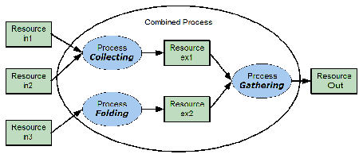
|
Example 3-4: Complex Combined Process Node
The following example specifies an inline combined folder and collector and gatherer.
< JDF ID = "ID" xmlns = "http://www.CIP4.org/JDFSchema_1_1" Status = "Waiting"
Type = "Combined" Types = "Collecting Gathering Folding" JobPartID = "ID345"
< GatheringParams ID = "gp1" Class = "Parameter" Status = "Available" />
< FoldingParams ID = "fp1" Class = "Parameter" Status = "Available" />
< Component ID = "in1" Class = "Quantity" Status = "Available" ComponentType = "Sheet" />
< Component ID = "in2" Class = "Quantity" Status = "Available" ComponentType = "Sheet" />
< Component ID = "in3" Class = "Quantity" Status = "Available" ComponentType = "Sheet" />
< Component ID = "ex1" Class = "Quantity" Status = "Unavailable" ComponentType = "Sheet"
PipeProtocol = "Internal" PipeID = "ex1" />
< Component ID = "ex2" Class = "Quantity" Status = "Unavailable" ComponentType = "Sheet"
PipeProtocol = "Internal" PipeID = "ex2" />
< Component ID = "Out" Class = "Quantity" Status = "Unavailable"
< GatheringParamsLink Usage = "Input" rRef = "gp1" />
< FoldingParamsLink Usage = "Input" rRef = "fp1" />
< ComponentLink CombinedProcessIndex = "0" Usage = "Input" rRef = "in1" />
< ComponentLink CombinedProcessIndex = "0" Usage = "Input" rRef = "in2" />
< ComponentLink CombinedProcessIndex = "2" Usage = "Input" rRef = "in3" />
< ComponentLink CombinedProcessIndex = "0" Usage = "Output" rRef = "ex1" />
< ComponentLink CombinedProcessIndex = "2" Usage = "Output" rRef = "ex2" />
< ComponentLink CombinedProcessIndex = "1" Usage = "Input" rRef = "ex1" />
< ComponentLink CombinedProcessIndex = "1" Usage = "Input" rRef = "ex2" />
< ComponentLink CombinedProcessIndex = "1" Usage = "Output" rRef = "Out" />
3.3.4 Process Nodes
Process Nodes represent the very lowest level in a Job hierarchy. They must not contain further nested JDF Nodes, as every Process Node is a leaf Node. These Nodes define the smallest work unit that can be scheduled and executed individually within the JDF workflow model. In Figure 3-6 below, Nodes 7-17 represent Process Nodes. The various individual Process Node types are specified in Section 6, “Processes”.
3.4 AncestorPool
When a Job is spawned, an AncestorPool is created in the spawned JDF to identify its parents and grandparents. This allows storing of information about Job context in a spawned Node as well as allowing the Job to be correctly merged with its parent after it is completed. The AncestorPool Element is only required in the root of a spawned JDF. Spawning and merging are described in Section 4.4, “Spawning and Merging” . The AncestorPool Element contains an ordered list of one or more Ancestor Elements, which reflect the family tree of a spawned JDF. Each Ancestor Element identifies exactly one ancestor Node. The ancestor Nodes reside in the original Job where the Job with the AncestorPool has been spawned off. The position of the Ancestor Element in the ordered list defines the position in the family tree. The first Element in the list is the original root Element, the last Element in the list is the parent, the last but one, the grandparent and so on. The following table lists the contents of an AncestorPool Element.
|
Ancestor + |
Ordered list of one or more Ancestor Elements, which reflect the family tree of a spawned JDF. |
|
|
Part * |
List of parts that this Node was spawned with. Used in case of parallel spawning of a Node. This defines the aggregated Part ( s ) in the case of nested spawns, (i.e., a logical AND of all spawned Part ( s )). For instance, the JDF that was spawned with a SheetName Partition and subsequently spawned with a Separation would contain both SheetName and Separation within Part . |
3.4.1 Element: Ancestor
An Ancestor Element must contain read-only copies of all the Attributes of the Node that it represents with the exception of the ID Attribute, which must be copied to the NodeID Attribute of that Ancestor Element. Ancestor Elements may contain further read-only references to CustomerInfo and NodeInfo . The Attributes and Elements of Ancestor Elements are described below.
|
Copy of the Activation Attribute from the ancestor Node. For details, see Table 3-5, “JDF Node”. Values are from : JDF /@ Activation . |
||
|
Copy of the Category Attribute from the original ancestor Node. For details, see Table 3-5, “JDF Node”. Values are from : JDF /@ Category . |
||
|
The URL of the JDF file where the ancestor Node resided prior to spawning. Note that despite of Attribute name, URL NEED NOT refer to a file. URL MAY refer to any url scheme. |
||
|
Copy of the ICSVersions Attribute from the original ancestor Node. For details, see Table 3-5, “JDF Node”. Values are from : JDF /@ ICSVersions . |
||
|
Copy of the JobID Attribute from the original ancestor Node. For details, see Table 3-5, “JDF Node”. |
||
|
Copy of the JobPartID Attribute from the original ancestor Node. For details, see Table 3-5, “JDF Node”. |
||
|
Copy of the MaxVersion Attribute from the original ancestor Node. For details, see Table 3-5, “JDF Node”. |
||
|
Copy of the NamedFeatures Attribute from the original ancestor Node. For details, see Table 3-5, “JDF Node”. |
||
|
Copy of the ID Attribute of the ancestor Node. Note: the data type is NMTOKEN and not ID because the ID does not reside in the spawned JDF. The corresponding ID Attribute resides in the original JDF . |
||
|
Identification of the project context that this JDF belongs to. Used by the application that created the JDF Job. |
||
|
Copy of the RelatedJobID Attribute from the original ancestor Node. For details, see Table 3-5, “JDF Node”. |
||
|
Copy of the RelatedJobPartID Attribute from the original ancestor Node. For details, see Table 3-5, “JDF Node”. |
||
|
Status ? |
Copy of the Status Attribute from the original ancestor Node. For details, see Table 3-5, “JDF Node”. |
|
|
Copy of the StatusDetails Attribute from the original ancestor Node. For values and details, see Table 3-5, “JDF Node”. Values include those from: JDF /@ StatusDetails |
||
|
Copy of the Type Attribute from the original ancestor Node. For details, see Table 3-5, “JDF Node”. Values are from : JDF /@ Type . |
||
|
Copy of the Types Attribute from the original ancestor Node. For details, see Table 3-5, “JDF Node”. Values are from : JDF /@ Types . |
||
|
Copy of the Version Attribute from the original ancestor Node. For details, see Table 3-5, “JDF Node”. |
||
|
Reference to or copy of the CustomerInfo Element or Resource from the original Node. In JDF 1.3 and beyond, CustomerInfo may be a Resource reference.For details, see Table 3-5, “JDF Node”. |
||
|
NodeInfo ? |
Reference to or copy of the NodeInfo Element or Resource from the original Node. In JDF 1.3 and beyond, NodeInfo may be a Resource reference.For details, see Table 3-5, “JDF Node”. |
3.5 CustomerInfo
Starting with JDF 1.3, CustomerInfo is deprecated in its use as a direct child of a JDF Node, and becomes a Resource (which is a child of some ResourcePool ; see Section 3.8, “ResourcePool and its Resource Children”).
3.6 NodeInfo
Starting with JDF 1.3, NodeInfo is deprecated in its use as a direct child of a JDF Node, and becomes a Resource (which is a child of some ResourcePool ; see Section 3.8, “ResourcePool and its Resource Children”).
3.7 StatusPool
Starting with JDF 1.3, StatusPool is deprecated and replaced by a Partitioned NodeInfo Resource. For details, see Section P.1.2, “StatusPool” .
3.8 ResourcePool and its Resource Children
3.8.1 ResourcePool
All Resources are contained in the ResourcePool Element of some Node. The ResourcePool Element is described in the following table.
|
Resource * |
List of Resource Elements. The Resource Elements are abstract and serve as placeholders for any Resource type. |
3.8.2 Resource
Resources represent the “things” that are produced or consumed by Processes. They might be physical items such as inks, plates or glue; electronic items such as files or images; or conceptual items such as parameters and Device settings. Processes describe what Resources they input or output through ResourceLink Elements, discussed in Section 3.9, “ResourceLinkPool and ResourceLink” . By examining the input and outputs of a set of Processes, it is possible to determine Process dependencies, and therefore Job routing.
3.8.3 Abstract Resource
Like the Type Attribute in abstract JDF Nodes, the Class Attribute in Resource Elements helps to identify how particular Resources are to be used. These values are listed in Table 3-10, “Abstract Resource Element”, below, and are described in greater detail in the sections that follow.
Modification note: GeneralID has moved to Table 3-1, “Any Element (generic content)”.
|
The name of the Agent application that created the Resource. Both the company name and the product name may appear, and should be consistent between versions of the application. |
||
|
The version of the Agent application that created the Resource. The format of the version string may vary from one application to another, but should be consistent for an individual application. |
||
|
Identification of the Resource, (e.g., in a catalog environment). Defaults to the value of ProductID . Deprecation note: starting with JDF 1.4, use GeneralID . |
||
|
Additional details of a Resource in a catalog environment. Deprecation note: starting with JDF 1.4, use GeneralID . |
||
|
Defines the Abstract Resource type. For details, see the sections that follow. Class must be specified in the Resource root, must not be specified in a Resource leaf and should be specified in an inline Resource Subelement. |
||
|
Unique identifier of a Resource. ID must be specified in the Resource root, must not be overwritten in a Resource leaf and should not be specified in an inline Resource Subelement. |
||
|
If true , the Resource must not be modified, e.g., because it resides in a spawned ticket that is spawned in read-only mode or referenced by an Audit and must not be modified without invalidating the Audit . |
||
|
Description of the interpretation of Partitions. PartUsage must not be specified outside of the root of a Resource. For details on PartUsage and Partitioning, see Section 3.10.7.4, “Implicit, Sparse and Explicit PartUsage in Partitioned Resources”. Explicit - Require explicit Partition matches. All referenced Partitions referenced in Part must exist, otherwise it is an error. Implicit - The closest matching Partition with no non-matching Partition Keys is returned. If keys with non-matching values exist, the first Partition Element that is closer to the root than the referenced Partition and has no non-matching keys is returned. Sparse - The closest matching Partition with no non-matching Partition Keys is returned. If keys with non-matching values exist the link is in error. PartUsage = "Sparse" is typically used to describe versioned Resources, where not all Nodes are fully Partitioned, e.g., only the Black Separations of a 4 color Resource are versioned. New in JDF 1.3 Modification note: PartUsage was moved to this table from Table 3-27, “Partitionable Resource Element” in JDF 1.2. |
||
|
If this Attribute exists, the Resource is a pipe. PipeID is used by JMF pipe-control Messages to identify the pipe. For more information, see Section 4.3.3, “Overlapping Processing Using Pipes” . |
||
|
Defines the protocol use for pipe handling. JMF and Internal are the only non-proprietary piping protocols that are supported. Proprietary pipe protocols may be specified in addition to those defined below but will not necessarily be interoperable. Internal - Internal or virtual pipe used within a Combined Process. |
||
|
Pipe request URL. Dynamic pipe requests to this Resource should be made to this URL. Note that this URL is only used for initiating pipe requests. Responses to a pipe request are issued to the URL that is defined in the PipePush or PipePull Message. For details on using PipeURL , see Section 4.3.3, “Overlapping Processing Using Pipes”. Note: in most cases this is the URL of the Controller of the other end of the pipe. This might seem counterintuitive, but it allows parallel spawning and merging of Processes that represent a dynamic pipe without having to include the Node that describes the other end in the spawned file. |
||
|
An ID of the Resource as defined in the MIS system. For instance item codes or article numbers or identifiers on semi-finished products or Handling Resource s. |
||
|
Array of ID s of internally referenced Resources. In JDF 1.2 and beyond, it is up to the implementation to maintain references. |
||
|
List of SpawnID values. This is used as a reference count for how often the Resource has been spawned. |
||
|
The spawn status of a Resource indicates whether or not a Resource has been spawned, and under what circumstances. The SpawnStatus of a Resource that has ResourceRef Elements is defined as the maximum SpawnStatus (whose values are ordered) of all recursively linked Resources. Value are ordered from lowest to highest NotSpawned -- Indicates that the Resource has not been copied to another Process. SpawnedRO - Indicates that the Resource has been copied to another Process where it cannot be modified. The “ RO” stands for read-only. SpawnedRW - Indicates that the Resource has been copied to another Process where it can be modified. The “ RW ” stands for read/write. |
||
|
The status of a Resource indicates under what circumstances it can be processed or modified. Status must be specified in the Resource root, must not be specified in an inline Resource Subelement and may be overwritten in a Resource leaf. The values listed below are assumed to be ordered so that the Status of a Resource that references further Resources can be defined as the minimum Status of all recursively linked Resources. The values are ordered from lowest to highest Incomplete - Indicates that the Resource does not exist, and the metadata is not yet valid. Incomplete Resources need not specify all Attributes or Elements defined in Chapter 7, “Resources” . The structural Attributes Class and ID must be specified. Rejected - Indicates that the Resource has been rejected by an Approval Process. The metadata is valid. New in JDF 1.2 Unavailable - Indicates that the Resource is not ready to be used or that the Resource in the real world represented by the Physical Resource in JDF is not available for processing. The metadata is valid. InUse - Indicates that the Resource exists, but is in use by another Process. Also used for active pipes (see Section 3.8.7, “Pipe Resources” and Section 4.3.3, “Overlapping Processing Using Pipes”). Draft - Indicates that the Resource exists in a state that is sufficient for setting up the next Process but not for production. Complete - Indicates that the Resource is completely specified and the parameters are valid for usage. A Physical Resource with Status = "Complete" is not yet available for production, although it is sufficiently specified for a Process that references it through a ResourceRef from a Parameter Resource to commence execution. Available - Indicates that the whole Resource is available for usage. |
||
|
Unique ID that identifies the Resource or Resource Partition. Note that only one Resource , Resource Partition or ResourceUpdate with a given value of UpdateID may occur per JDF document, even though the scope of the ResourceUpdate is local to the Resource that it is defined in. |
||
|
List of Resources that were or should be taken into account to populate this Resource. |
||
|
Results of quality measurements which were performed during or after the production of this Resource. |
3.8.3.1 Element: SourceResource
|
Reference to Resources that were or should be taken into account to populate this Resource . Resource is an Abstract Element that may reference either Process Resources or Intent Resource s that contain information that is used to populate this Resource. Note that Resource is an abstract type and designates any valid JDF Resource, e.g. StrippingParams or ColorIntent . |
3.8.4 Structure Diagram
Figure 3-5 shows the structure of the Abstract Resource Classes defined above. Arrows define inheritance relations and the thin orthogonal lines describe containing relations.
|
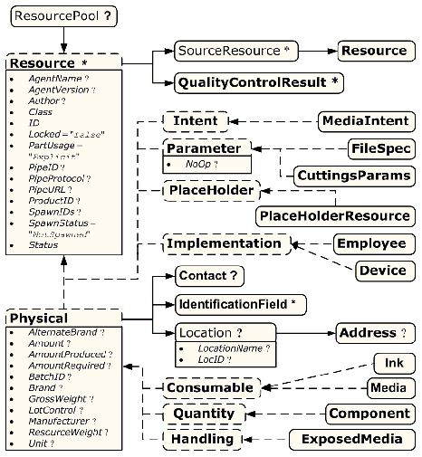
|
3.8.5 Resource Classes 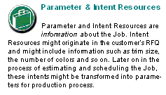
The following sections describe the functions of each of the seven values of the Class Attribute. All Resources fall into one of these Classes. In Section 7, “Resources”, the Class of each Resource is indicated in the Resource Properties subheading.
3.8.5.1 Parameter Resource
Parameter Resource s define the details of Processes, as well as any non-physical computer data such as files used by a Process. They are usually associated with a specific Process. For example, a required Input Resource of the DigitalPrinting Process is the DigitalPrintingParams Resource. Most predefined Parameter Resource s contain the suffix “Params” in their titles. Examples of Parameter Resource s include FoldingParams and ConventionalPrintingParams .
3.8.5.1.1 Abstract Parameter Resource
|
A value of true indicates that the Process step that is parameterized by this Resource or Resource Partition must not be executed. If false or not specified, the Resource is operational and that the Process step that is parameterized by this Resource or Resource Partition must be executed. The NoOp Attribute must only be used for Processes that input and output exchange Resources of identical Resource types, (e.g., RunList or Component ). |
3.8.5.2 Intent Resource
Intent Resource s define the details of products to be produced without defining the Process to produce them. In addition, they provide structures to define sets of allowable options and to match these selections with prices. The details of all Intent Resources are described in Section 7.1, “Intent Resources”. The Abstract Intent Resource Element contains no Attributes or Elements besides those contained in the Abstract Resource Element.
3.8.5.3 Implementation Resource
Implementation Resource s define the Devices and operators that execute a given Node. Only two Implementation Resource types are defined: Employee (see Section 7.2.71, “Employee” ) and Device , each of which is described in greater detail in Section 7, “Resources”.
Implementation Resource s can only be used as Input Resources and may be linked to any Process. The Abstract Implementation Resource Element contains no Attributes or Elements besides those contained in the Abstract Resource Element. An example demonstrating how to use Implementation Resource s is provided in Section 3.9.6, “ImplementationLink” .
Note that if a Node links to a Device Resource in order to specify that the Device is intended to execute the Node, the Device Resource should not specify the capabilities of the Device.
3.8.5.3.1 ImplementationResource
When an Implementation Resource is a Subelement, it is called an ImplementationResource .
3.8.5.4 Consumable Resource
A Consumable Resource is consumed during a Process. Examples include Ink and Media . Consumable Resource s are the unmodified inputs in a Process chain. A Consumable Resource is a Physical Resource and inherits the contents of the Abstract Physical Resource Element.
3.8.5.5 Quantity Resource
A Quantity Resource has been created by a Process from either a Consumable Resource or an earlier Quantity Resource . For example, printed Sheets are cut and a pile of cut blocks is created. A Component Resource is an example of a Quantity Resource . A Quantity Resource is a Physical Resource and inherits the contents of the Abstract Physical Resource Element.
3.8.5.6 Handling Resource
A Handling Resource is used during a Process, but is not destroyed by that Process. The ExposedMedia and Tool Resources are examples of such a Resource, although it does describe various kinds of items such as film and plates. A Handling Resource may be created from a Consumable Resource . A Handling Resource is a Physical Resource and inherits the contents of the Abstract Physical Resource Element.
3.8.5.7 Physical Resource 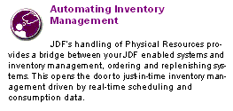
A Physical Resource is a Resource that is a Consumable Resource , a Quantity Resource or a Handling Resource (whose Class is "Consumable" , "Quantity" or "Handling" , respectively):
3.8.5.7.1 PhysicalResource
When a Physical Resource is a Subelement, it is called a PhysicalResource .
3.8.5.7.2 Abstract Physical Resource
Table 3-13, “Abstract Physical Resource Element” , defines the additional Attributes and Elements that can be defined for Physical Resource s. The Processes that consume Physical Resource s--any kind of Physical Resource --have the option of using these Attributes and Elements to determine in what way the Resources are to be consumed.
|
Information, such as the manufacturer or type, about a Resource compatible to that specified by the Brand Attribute, which is described below. |
||
|
Actual amount of the Resource that is available. Note that the amount of consumption and production of a Node is specified in the corresponding ResourceLink Element. For details on amount handling, see Section 3.10.4, “Resource Amount”. For the unit of measurement, see the Unit Attribute below. |
||
|
Total amount of the Resource that has been produced by all Nodes that reference this Resource as output. This corresponds to the sum of all ActualAmount values of output ResourceLink Elements of leaf JDF Nodes with Status = "Completed" that reference this Resource. For the unit of measurement, see the Unit Attribute below. |
||
|
Total amount of the Resource that is referenced by all Nodes that will consume this Resource. This corresponds to the sum of all Amount values of input ResourceLink Elements of all Processes that consume this Resource. In case the Resource is the last Resource in a Process chain, AmountRequired specifies the sum of all Amount values of all output ResourceLink Elements that produce this Resource. For the unit of measurement, see the Unit Attribute below. |
||
|
ID of a specific batch of the Physical Resource |
||
|
Information, such as the model, part number and/or type, about the Resource being used. Some examples are as follows.
Prior to JDF 1.3, Brand included details of the Manufacturer , which should be specified in Manufacturer . |
||
|
Gross weight of a single Resource, as counted in Amount , in grams. |
||
|
Specifies whether the Resource is lot controlled. Controlled - Resource is lot controlled, lot usage should be reported in ResourceAudit Elements. |
||
|
Net weight of a single Resource, as counted in Amount , in grams. |
||
|
Unit of measurement for the values of Amount , AmountProduced and AmountRequired . Values include those from: Table 1-7, “Units used in JDF”. Note: that it is strongly discouraged to specify units other than those that are defined in Table 1-7, “Units used in JDF”. |
||
|
Contact ? |
If this Element is specified, it describes the owner of the Resource. |
|
|
If this Element is specified, a bar code or label is associated with this Physical Resource . |
||
|
Location ? |
Description of details of the location of this Resource. Note, in order to describe multiple locations, Resources may be Partitioned by the Location Partition Key as described in Section 3.10.5, “Description of Partitioned Resources”. |
3.8.5.7.3 Element: Location
|
Name of the location, (e.g., in MIS). This allows the user to describe distributed Resources. Values include those from: Table C-21, “Input Tray and Output Bin Names” . |
||
|
Address ? |
Address of the storage facility. For more information, see Section 7.2.2, “Address”. |
3.8.5.8 PlaceHolder Resource
PlaceHolder Resource s, unlike Physical Resource s, do not describe any logical or physical entity. Rather, they define Process linking and help to define Process ordering when the exact nature of interchange Resources is still unknown. In essence, they serve as placeholders that stand in for defined Resources. Using PlaceHolder Resource s, a processing skeleton can be constructed that gives a basic shape to a Job. The appropriate Resources can be substituted for PlaceHolder Resource s when they become known.
This kind of Resource should only be used to link Nodes of Type = "ProcessGroup" , since Process leaf Nodes have well defined Resources that should be used in preference. The only Resource whose Class = "PlaceHolder" is called PlaceHolderResource .
Like Implementation Resource s, PlaceHolder Resource s contain no Attributes besides those contained in the Abstract Resource Element.
3.8.6 Position of Resources within JDF Nodes
Resources may exist in any JDF Node, but JDF Nodes must reference only local or global Resources. In other words, JDF Nodes must reference Resources only in the two kinds of locations: in the Node’s own ResourcePool Element, or in JDF Nodes that are hierarchically closer to the JDF root. An exception to this rule, however, occurs if two independent Jobs are merged for a Process step and are to be separated afterwards, as is the case when two independent Jobs are printed on the same Web Press. For further details on independent Job merging, see Section 4.4.5, “Case 5: Spawning and Merging of Independent Jobs”.
It is good practice to put Resources into the closest Node that references the Resource. For example, the RenderingParams Resource should be located in the Rendering Node, unless it is used by multiple Rendering Processes, in which case it should be located in the Process Group Node that contains the Rendering Process Nodes. Resources that link more than one Node should be placed in the parent Node of the siblings that are linked by the Resource.
A Process that needs additional detailed Process information specifying the creation of a Resource must infer this information by explicitly linking to the appropriate Parameter Resource .
3.8.7 Pipe Resources
A Pipe describes the Resource dependency in which a Process begins to consume a Resource while it is being produced by another Process (e.g., stacking components while they are being printed) or consuming a data stream while it is being written by an upstream Process. Note that defining a Pipe Resource does not automatically set up communication between Processes. The Controllers/Agents that execute the Process must still implement the protocol that defines the Pipe.
Using dynamic pipe control, a downstream Process can control the total quantity produced by an upstream Process, and/or the quantity buffered by an inter-Process transport Device, (i.e., Conveyor belt.) Additional description of pipes and Process communication via pipes is provided in Section 4.3.3, “Overlapping Processing Using Pipes”.
Resources may contain a string Attribute called PipeID that declares the Resource to be a pipe, and identifies it in a dynamic-pipe messaging environment. A pipe that is also controlled by JMF pipe Messages is called dynamic pipe . For more information about dynamic pipes, see Section 4.3.3.2, “Dynamic Pipes”.
3.8.8 ResourceUpdate
For details of the deprecated ResourceUpdate Element, see Section P.1.1, “ResourceUpdate” .
3.9 ResourceLinkPool and ResourceLink
3.9.1 ResourceLinkPool
Each JDF Node contains a ResourceLinkPool Element that in turn contains all of the ResourceLink Elements that link the Node to the Resources it uses. The following table shows the contents of a ResourceLinkPool Element.
|
List of ResourceLink Elements. A ResourceLink Element is Abstract and is a placeholder for a concrete ResourceLink Element, such as MediaLink . |
3.9.2 ResourceLink
ResourceLink Elements describe what Resources a Node uses, and how it uses them. They also define whether the Resources are inputs or outputs. These inputs and outputs provide conceptual links between the execution Elements of JDF Nodes. Outputs of one Node can in turn become inputs in another Node, and a given Node must not be executed before Status all specified Input Resources is greater than or equal to ResourceLink / @MinStatus or ResourceLink / @MinLateStatus .1 Figure 3.6 shows two Processes that are linked by a Resource. The Resource represents the output of Node 1, which in turn becomes an input for Node 2.
ResourceLink Elements also allow Node dependencies to be calculated. The following diagram summarizes Resource linking within a JDF Node. In this example there are two Resources, A and B , which are placed in the Node’s ResourcePool . To reference the Resources, the Node has two ResourceLink Elements, ALink and BLink , in the ResourceLinkPool . A ResourceLink is named by appending “Link” to the type of Resource referenced. Resource B also contains a reference to Resource A, called ARef . References to Resources from within Resources are named by appending “Ref” to the type of Resource referenced (see Section 3.10.2, “ResourceRef - Element for Inter-Resource Linking and refelement”).
The previous section describes Resources used by the Node in which it resides. This section describes how Resources can serve as links between Nodes. As was described in Section 2.2, “JDF Workflow”, any Resource that is the output of one Process will very likely serve as an input of a subsequent Process. Furthermore, some Resources are shared between ancestor Nodes and their child Nodes.
ResourceLink Elements may also contain Attributes to select a part of a Resource, such as a single separation. A detailed description of Resource Partitioning is given in Section 3.10.5, “Description of Partitioned Resources”.
Because implementation ResourceLink Elements define the usage of a specific Device during the course of a Job, situations can arise where that Resource is not needed during the whole processing time. For instance, a forklift that only has to transport the completed components need not be available during the entire Process run, only during the times when it is needed. This means that, contrary to the general rule that all Resources must be Available for Node execution to commence, a Node can commence when Implementation Resource s are still InUse by other Processes if Start or StartOffset are specified. ImplementationLink Elements always have a Usage of Input .
ProcessGroup and Product Intent Nodes can be defined without the knowledge of the individual Process Nodes that define a specific workflow. In this case, these intermediate Nodes will contain ResourceLink Elements that link the appropriate Resources. For example, a prepress Node might be defined that produces a set of plates. When the Processes for creating the plates are defined in detail, the Agent that writes the Nodes might remove the ResourceLink Elements from the intermediate Node. Removing the ResourceLink specifies that the intermediate Node can execute; (i.e., it can be sent to the appropriate Controller or department), even though the specific Resources are not yet available. If the ResourceLink Elements are not removed, the intermediate Node cannot execute until the linked Input Resources become available.
ResourceLink Elements may be used for Process control. For example, if a proof Input Resource is needed for a print Process, a print run can commence only when the proof is signed. The JDF format specification also includes a complete specification of how Resources are managed when JDF tickets are spawned and merged.
In some cases, determining whether to store information in an input or an Output Resource can be difficult, as the distinction can be ambiguous. For example, is the definition of the color of a separation in the RIP Process a property of the output separation or a parameter that describes the RIP Process? In order to reduce this ambiguity, the following rules have been defined for input and Output Resources of Processes (see Section 6, “Processes” and Section 7, “Resources”).
- Product Intent and Process parameters are generally Input Resources, except when one Process defines the parameters of a subsequent Process.
- Consumable Resource s must always be Input Resources.
- Quantity Resource s and Handling Resource s are used both as Input Resources and Output Resources. Their usage is defined by the “natural” Process usage. For example, a printing plate is described as a Resource that is the output of a Process and the input of a Process.
- Processed material is exchanged from Node to Node using the Component Resource. Product Intent Nodes also create Component Output Resources.
- Every detailed Process description must be defined as an input parameter of the first Process where it is referenced. This means that a Device must not infer Process parameters from its Output Resources. For example, paper weight in grams may be defined in the Component Output Resource of the printing Process but must be defined as an input parameter of the Media of the printing Process.
- Any Resource parameter that is used must be referenced explicitly. Resource parameters cannot be inferred by following the chain of Nodes backwards. This would make spawning of Nodes non-local.
- The last Process in a chain of Processes must define the Output Resource of its parent Process.
- In case of parallel Processing, the sum of the outputs of all parallel Subnodes must define the output of the parent Node.
Like Resource Elements, ResourceLink Elements are an Abstract data type. The Class tree of Abstract ResourceLink Elements is further subdivided into Classes defined by the Class Attribute of the Resource that it references. Individual instances of ResourceLink Elements are named by appending the suffix “Link” to the name of the referenced Resource. For example, the link to a Component Resource is entitled ComponentLink and the link to a ScanParams Resource is entitled ScanParamsLink . The following seven Abstract ResourceLink Classes exist:
- ConsumableLink
- HandlingLink
- ImplementationLink
- IntentLink
- ParameterLink
- PlaceHolderLink
- QuantityLink
Each listed Class name is described in greater detail in the sections that follow.
3.9.3 Structure Diagram
Figure 3-8 shows the Abstract types derived from the ResourceLink type.
|
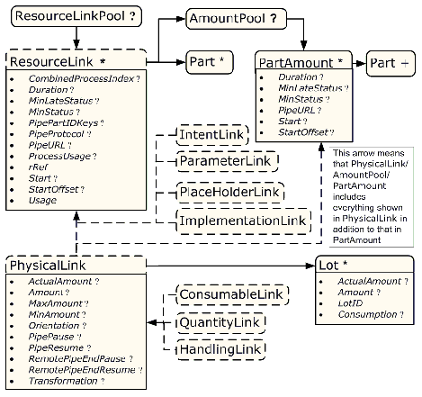
|
3.9.4 Abstract ResourceLink
The following table lists the possible contents of all ResourceLink Elements.
|
Combined Process Nodes and Process Group Nodes may contain Resources from multiple Process Nodes. The CombinedProcessIndex Attribute specifies the indices of individual Processes in the Types Attribute to which a ResourceLink in a Combined Process Nodes or Process Group Node belongs. Multiple entries in CombinedProcessIndex specify that the ResourceLink is used by the respective multiple Processes in the Combined Process Node. It must be specified when multiple Resources of the same name and ResourceLink /@ Usage are specified in one JDF Node. If CombinedProcessIndex is not specified, even though multiple Processes in the Combined Process Node or Process Group Node may link to the Resource, the ResourceLink applies to all of these Processes. |
||
|
Combined Process Nodes contain Input Resources from multiple Process Nodes. The CombinedProcessType Attribute specifies the name individual Process to which a ResourceLink in a Combined Process Node belongs. It must match one of the entries in the Types Attribute of the Node. Deprecation note: replaced by CombinedProcessIndex in JDF 1.1. |
||
|
If true , the Process can commence with a draft Resource. Default = "false" . Replaced with MinLateStatus and MinStatus in JDF 1.3 and beyond. |
||
|
Estimated duration during which the Resource will be used. Modification note: starting with JDF 1.4, this Attribute is moved from Table 3-20, “Abstract ImplementationLink or //AmountPool/PartAmount Element”. |
||
|
Minimum value of Resource / @Status for the execution of this Node to commence when deadlines are endangered, i.e., when the time defined by NodeInfo / @LastStart or implied by NodeInfo / @LastEnd is approaching. Default value is from: @MinStatus . Values are from : Resource / @Status . |
||
|
Minimum value of Resource / @Status for the execution of this Node to commence. Default value is: "Available" if @Usage = "Input" and "Unavailable" if @Usage = "Output" . Values are from : Resource / @Status . |
||
|
Defines the granularity of a dynamic pipe for a Partitioned Resource. For instance, if a Resource were Partitioned by Sheet, surface and separation (i.e. Resource /@ PartIDKeys = "SheetName Side Separation" ) and if the ResourceLink /@ PipePartIDKeys = "SheetName Side" , then pipe requests would be issued only once per surface. The contents of PipePartIDKeys must be a subset of the PartIDKeys Attribute of the Resource that is linked by this ResourceLink . Default value is from: the implied or explicit value of @ PipePartIDKeys of the referenced Resource. Values are from : Resource / @PartIDKeys . |
||
|
Defines the protocol use for pipe handling. JMF and Internal are the only non-proprietary piping protocols that are supported. Proprietary pipe protocols may be specified in addition to those defined below but will not necessarily be interoperable. Default value is: JMF (if PipeURL is specified); otherwise referenced Resource /@ PipeProtocol . Internal - Internal or virtual pipe used within a Combined Process. New in JDF 1.2 |
||
|
Pipe request URL. Dynamic pipe requests from this end of a pipe should be made to this URL. In most cases this URL is the URL of the Controller of the other end of the pipe. This might seem counterintuitive, but it allows parallel spawning and merging of Processes that represent a dynamic pipe without having to include the Node that describes the other end in the spawned file. Default value is: referenced Resource /@ PipeURL Note: this URL is only used for initiating pipe requests. Responses to a pipe request are issued to the URL that is defined in the PipePush or PipePull Message. For details on using PipeURL , see Section 4.3.3, “Overlapping Processing Using Pipes”. |
||
|
Identifies a Process’s usage of a Resource if multiple Resources of the same type can be supplied. For example, this Attribute appears when two Component Resources--one Cover and one BookBlock--are used in CoverApplication . Values include those from: Table 3-17, “ProcessUsage Attribute Values”. Values include those from: ICS documents. New in JDF 1.4 Note: the values of ProcessUsage can be derived from the appropriate Process descriptions in Section 6, “Processes”. Section 6.1, “Process Template” defines the parenthesized notation for denoting the value of ProcessUsage (e.g., Component (Cover)). |
||
|
Link to a Subelement within the Resource. In JDF 1.2 and beyond, a ResourceLink is able to reference a Resource only if it is a direct child of a ResourcePool . |
||
|
Time and date when the usage of the Resource starts. Modification note: starting with JDF 1.4, this Attribute is moved from Table 3-20, “Abstract ImplementationLink or //AmountPool/PartAmount Element”. |
||
|
Offset time when the Resource is needed after processing has begun. If both Start and StartOffset are specified, Start has precedence. Modification note: starting with JDF 1.4, this Attribute is moved from Table 3-20, “Abstract ImplementationLink or //AmountPool/PartAmount Element”. |
||
|
Resource usage within this JDF Node. |
||
|
Definition of partial amounts and pipe parameters for this ResourceLink . The allowed contents of the AmountPool are described for the various Subclasses of ResourceLink in the sections below. If AmountPool is specified, ResourceLink must not contain any of Amount , ActualAmount , MaxAmount or MinAmount |
||
|
Part * |
The Part Elements identify the parts of a Partitioned Resource that are referenced by the ResourceLink . The structure of the Part Element is defined in Table 3-28, “Part Element”. For details on Partitioned Resources, see Section 3.10.5, “Description of Partitioned Resources” . |
-- Attribute: ProcessUsage
|
Used for Resource in an Output Resource of Approval l |
|
|
Used for Component in an Input Resource of EndSheetGluing |
|
|
Used for Component in an Input Resource of ChannelBinding , EndSheetGluing and RingBinding |
|
|
Used for Component in an Input Resource of BoxPacking |
|
|
Used for Component in an Input Resource of CasingIn |
|
|
Used for Component in an Input Resource of Inserting |
|
|
Used for Component in an Input Resource of ChannelBinding and CoverApplication |
|
|
Used for Media in an Input Resource of CaseMaking |
|
|
Used for Component and Media in an Input Resource of CaseMaking |
|
|
Used for ExposedMedia in an Input Resource of ConventionalPrinting |
|
|
Used for RunList in an Input Resource of Imposition , LayoutPreparation and Stripping and used for RunList in an Output Resource of Stripping |
|
|
Used for Component in an Input Resource of EndSheetGluing |
|
|
Used for Component in an Output Resource of ConventionalPrinting and DigitalPrinting |
|
|
Used for Component in an Input Resource of ConventionalPrinting and DigitalPrinting |
|
|
Used for Component in an Input Resource of Labeling |
|
|
Used for RunList in an Input Resource of Imposition , LayoutPreparation and Tiling , and used for RunList in an Output Resource of LayoutPreparation and Stripping |
|
|
Used for Component in an Input Resource of Inserting |
|
|
Used for ExposedMedia in an Input Resource of ConventionalPrinting |
|
|
Used for Component in an Input Resource of ConventionalPrinting and DigitalPrinting , and used for ExposedMedia in an Input Resource of ConventionalPrinting |
|
|
Used for Resource in an Output Resource of Approval |
|
|
Used for Component in an Input Resource of RingBinding |
|
|
Used for Media in an Input Resource of CaseMaking |
|
|
Used for RunList in an Input Resource of Tiling |
|
|
Used for Media in an Input Resource of BoxPacking |
|
|
Used for Media in an Input Resource of BoxPacking |
|
|
Used for Component in an Output Resource of ConventionalPrinting and DigitalPrinting |
3.9.4.1 AmountPool and PartAmount
Whereas ResourceLink / Part identifies the Resource that the Process is consuming or producing, AmountPool is a container for the amount-related metadata of the Resource. Thus Process routing is described by ResourceLink / Part whereas tracking of amount related Attributes are described by AmountPool / PartAmount . AmountPool / PartAmount / Part MUST refer to existing Partitions or non-existing sub-partitions of existing partitions that are implicitly or explicitly referred to by ResourceLink / Part . For instance, if a ResourceLink refers to a partition with SheetName = "Sheet1" , AmountPool / PartAmount MAY refer to Sheet1 or any existing or non-existing child of Sheet1, but NOT to Sheet2 or any existing or non-existing child of Sheet2.
3.9.4.1.1 AmountPool
The following table lists the generic contents of an AmountPool Element. Further parameters of the AmountPool are described in the sections below.
|
Element that defines the amounts and pipe parameters for a Partitioned Resource. The contents of a PartAmount depends on the type of the ResourceLink . |
3.9.4.1.2 PartAmount
The following table lists the generic contents of a PartAmount Element. Further parameters of the PartAmount are described in the respective sections below (Table 3-20, “Abstract ImplementationLink or //AmountPool/PartAmount Element” and Table 3-21, “Abstract PhysicalLink or //AmountPool/PartAmount Element”). Note that PartAmount inherits values from its parent ResourceLink .
|
If true , the Process can commence with a draft Resource Partition. Replaced with MinLateStatus and MinStatus in JDF 1.3 and beyond. |
||
|
Estimated duration during which the Resource will be used. Modification note: starting with JDF 1.4, this Attribute is moved from Table 3-20, “Abstract ImplementationLink or //AmountPool/PartAmount Element”. |
||
|
Minimum value of Resource / @Status for the execution of this Node to commence when deadlines are endangered, i.e., when the time defined by NodeInfo / @LastStart or implied by NodeInfo / @LastEnd is approaching. Default value is from: @MinStatus . Values are from: Resource / @Status . |
||
|
Minimum value of Resource / @Status for the execution of this Node to commence. Default value is: "Available" if @Usage = "Input" and "Unavailable" if @Usage = "Output" . Values are from: Resource / @Status . |
||
|
Pipe request URL for this Partition. Dynamic pipe requests from this end of a pipe should be made to this URL. Note that this URL is only used for initiating pipe requests. Responses to a pipe request are issued to the URL that is defined in the PipePush or PipePull Message. For details on using PipeURL , see Section 4.3.3, “Overlapping Processing Using Pipes”. Note: in most cases this is the URL of the Controller of the other end of the pipe. This might seem counterintuitive, but it allows parallel spawning and merging of Processes that represent a dynamic pipe without having to include the Node that describes the other end in the spawned file. |
||
|
Time and date when the usage of the Resource starts. Modification note: starting with JDF 1.4, this Attribute is moved from Table 3-20, “Abstract ImplementationLink or //AmountPool/PartAmount Element”. |
||
|
Offset time when the Resource is needed after processing has begun. If both Start and StartOffset are specified, Start has precedence. Modification note: starting with JDF 1.4, this Attribute is moved from Table 3-20, “Abstract ImplementationLink or //AmountPool/PartAmount Element”. |
||
|
Part + |
Specifies the selected parts that the PartAmount is valid for. The granularity of Part must be at least that of a leaf Partition of the Resource . For instance, a Component MAY be Partitioned by SheetName and PartAmount could refer to SheetName and Condition . Multiple Part Elements specify that the referenced Elements have been Processed in one step, for instance two separations on a press run of a two color press. |
3.9.5 ParameterLink
A Parameter Resource is linked by an instance of a ParameterLink Element. This Element contains no further Attributes or Elements besides those found in the Abstract ResourceLink Element.
3.9.6 ImplementationLink
An Implementation Resource is linked by an instance of an ImplementationLink Element.
3.9.6.1 Abstract ImplementationLink
The Attributes in Table 3-20 can occur in either an Abstract ImplementationLink or // AmountPool / PartAmount Element that references an Implementation Resource .
Modification note: starting with JDF 1.4, all existing Attributes from Table 3-20, “Abstract ImplementationLink or //AmountPool/PartAmount Element” are moved to Table 3-16, “Abstract ResourceLink Element” and Table 3-19, “PartAmount Element”.
|
If true and the request cannot be fulfilled, the change may be logged as a Modified Audit and the Job can continue. If false , an error occurs if the request is not fulfilled. In JDF 1.2 and beyond use SettingsPolicy instead. |
Example 3-5: EmployeeLink As ImplementationLink
The following example shows how the operator Smith is linked to a ConventionalPrinting Process as the only valid operator.
<JDF xmlns="http://www.CIP4.org/JDFSchema_1_1" ID="J1" Status="Waiting"
Type="ProcessGroup" JobPartID="ID300" Version="1.4">
< Employee Class = "Implementation" ID = "L1" Status = "Available"
< Person FamilyName = "Smith" JobTitle = "Press Operator" />
< EmployeeLink Usage = "Input" rRef = "L1" />
3.9.7 ConsumableLink
A Consumable Resource is linked by an instance of an ConsumableLink Element, which inherits the contents of the Abstract PhysicalLink Element.
3.9.8 HandlingLink
A Handling Resource is linked by an instance of an HandlingLink Element, which inherits the contents of the Abstract PhysicalLink Element.
3.9.9 QuantityLink
A Quantity Resource is linked by an instance of an QuantityLink Element, which inherits the contents of the Abstract PhysicalLink Element.
3.9.10 PhysicalLink
Just as a Physical Resource inherits the contents of the Abstract Resource Element, a PhysicalLink inherits the contents of the Abstract ResourceLink Element.
It is important to note that the order of occurrence of links to Physical Resource s may be significant--most specifically with QuantityLink Elements. For example, a Gathering Process might have among its inputs, links to three Component Resources. The order of these links indicates the order in which the Component Resources are to occur in the new, gathered output Component .
3.9.10.1 Abstract PhysicalLink
The Table 3-21 describes additional Attributes for a PhysicalLink Element. The Attributes in Table 3-21 can occur in either an Abstract PhysicalLink or // AmountPool / PartAmount Element that references a Physical Resource .
|
Total amount of the Resource that has been produced (in a ResourceLink with Usage = "Output" ) or consumed (in a ResourceLink with Usage = "Input" ) by this Node in every execution. For details see Section 3.10.4, “Resource Amount” . |
||
|
For a link with a Usage of "Input" , specifies the amount of the Resource that is needed by the Process, in units as defined in the Resource. For a link with a Usage of "Output" , specifies the amount of the Resource that is to be produced by the Process, in units as defined in the Resource. Allows Resources to be only partially consumed or produced (see Section 3.10.4, “Resource Amount” ). If not specified, ResourceLink / @Amount defaults to Resource / @Amount. |
||
|
Defines the planned Amount including the maximum overage. If not specified, defaults to a system specified value based on Amount . |
||
|
Defines the planned Amount including the maximum underage that the Customer is willing to accept. If not specified, defaults to a system specified value based on Amount . |
||
|
Named orientation describing the transformation of the orientation of a Physical Resource relative to the ideal Process coordinate that uses this Resource as input or output. If Orientation is specified for an Output Resource, the Node that processes the Physical Resource is to manipulate the Resource in such a way as to reflect the transformation. The coordinate system of the Resource itself is not modified. At most one of Orientation or Transformation must be specified. For details on coordinate systems, see Section 2.5, “Coordinate Systems in JDF”. |
||
|
Parameter for controlling the pausing of a Process if the Resource amount in the pipe buffer passes the specified value. For details on using PipePause , see Section 4.3.3, “Overlapping Processing Using Pipes”. |
||
|
Parameter for controlling the resumption of a Process if the Resource amount in the pipe buffer passes the specified value. For details on using PipeResume , see Section 4.3.3, “Overlapping Processing Using Pipes”. |
||
|
Parameter for controlling the pausing of a Process at the other end of the pipe if the Resource amount in the pipe buffer passes the specified value. For details on using RemotePipeEndPause , see Section 4.3.3, “Overlapping Processing Using Pipes”. |
||
|
Parameter for controlling the resumption of a Process at the other end of the pipe if the Resource amount in the pipe buffer passes the specified value. For details on using RemotePipeEndResume , see Section 4.3.3, “Overlapping Processing Using Pipes”. |
||
|
Matrix describing the transformation of the orientation of a Physical Resource relative to the ideal Process coordinate using this Resource as input or output. If Transformation is specified for an Output Resource, the Node that processes the Physical Resource is to manipulate the Resource in such a way as to reflect the transformation. The coordinate system of the Resource itself is not modified. At most one of Orientation or Transformation must be specified. For details on coordinate systems, see Section 2.5, “Coordinate Systems in JDF”. |
||
|
Lot * |
Group of identifiers that uniquely identifies one lot of a Resource. If multiple Resource lots are planned to be consumed by a Process, this Element may appear multiple times to identify each Resource lot. Examples of Resource lots are individual rolls of paper, boxes of paper, cans of ink, etc. See Section 3.9.10.2, “Identification of Physical Resources” for details. For Resources that are solely identified by ProductID , Lot Element(s) need not be specified. |
Example 3-6: PartAmount
The following example shows an InkLink with an AmountPool /.
<JDF xmlns="http://www.CIP4.org/JDFSchema_1_1" ID="A1" Status="Waiting"
Type="ProcessGroup" JobPartID="ID300" Version="1.4">
< Ink Brand = "NoName" Class = "Consumable" ID = "Link0015"
PartIDKeys = "Separation" Status = "Available" >
< Ink ColorName = "Cyan" Separation = "Cyan" />
< Ink ColorName = "Magenta" Separation = "Magenta" />
< Ink ColorName = "Yellow" Separation = "Yellow" />
< Ink ColorName = "Black" Separation = "Black" />
< Ink ColorName = "Heidelberg Spot Blau"
Separation = "Heidelberg Spot Blau" />
< InkLink Usage = "Input" rRef = "Link0015" >
< PartAmount Amount = "1000" >
< PartAmount Amount = "1200" >
< Part Separation = "Magenta" />
< Part Separation = "Yellow" />
< PartAmount Amount = "3000" >
< Part Separation = "Black" />
< Part Separation = "Heidelberg Spot Blau" />
3.9.10.2 Identification of Physical Resources
MIS systems frequently include functionality for managing inventory. Many Physical Resource s that are consumed by production Processes are things that are tracked for inventory management purposes. This allows estimating the value of the Resources, ensuring that sufficient quantities are on hand, and tracking which specific Resources are used in production of which Jobs. At the most basic level, these Physical Resource s may be identified in JDF with Resource /@ ProductID .
Some MIS systems track these Resources at lower levels of detail, tracking individual Resource lots. An example of this might include tracking the individual rolls or boxes of paper. While it is theoretically possible to track individual Resource lots using a single identifier, many MIS users choose to track them with more than one identifier. Examples of some of these identifiers include roll numbers, lot numbers, purchase order numbers, receipt dates.
Because the required identifiers may be different from site to site, or even from one type Resource to another, it is not possible to track these Resources with multiple identifiers using JDF. Conveying the identification requirements to Devices would be too complex. Instead, a single identifier is used in JDF. In cases where multiple identifiers are normally used, the MIS must generate a unique identifier for each unique Resource lot. This unique identifier must then be mapped back to the correct unique Resource lot by the MIS.
3.9.10.2.1 Element: Lot
In the case of identifying Resources that are planned to be consumed, Lot Elements for each unique Resource lot are placed in the associated ResourceLink or a PartAmount Element within the ConsumableLink , See Table 3-21, “Abstract PhysicalLink or //AmountPool/PartAmount Element”.
|
Total amount of the Resource that has been consumed from this Resource lot. The sum of all values of ActualAmount for all Lot Elements should equal the ActualAmount specified in the parent ResourceLink of the Lot Elements. |
||
|
Total amount of the Resource that is planned to be consumed from this Resource lot. The sum of all values of Amount for all Lot Elements should equal the Amount specified in the parent ResourceLink of the Lot Elements. |
||
|
Unique identifier related to this Resource lot. The identifier must be unique within the scope of all Resource lots for the related ProductID . An MIS that uses multiple identifiers to identify a Resource lot must assign a single unique ID to each lot, and must map this single unique ID to the appropriate set of multiple identifiers. |
||
|
Used for indicating level of consumption for the Lot . This Attribute must not be specified for Resources that are produced. It may only be specified for Resources that are partially or fully consumed. This information is used by readers for auditing Consumable Resource s to identify shortages and overages. For example, a Roll of paper that was supposed to have 10,000 feet on it may be marked as fully consumed, yet only 9,400 feet of paper were consumed. |
In the case of identifying Resources after they have been consumed, Lot Elements are specified within the first ResourceLink in the ResourceAudit , or in the AmountPool that can appear inside the ResourceLink . See Section 3.11.4.8, “ResourceAudit” for the structure of the ResourceAudit Element.
Example 3-7: MediaLink with Lot
The following is an example of a ResourceLink used to report that a substitute Resource was used:
< JDF xmlns = "http://www.CIP4.org/JDFSchema_1_1" Type = "ConventionalPrinting"
Status = "Completed" ID = "ID100" JobPartID = "ID345" Version = "1.4" >
< Media ID = "RI007" Class = "Consumable" ProductID = "3002" Status = "Unavailable"
Brand = "Coated Roll Stock" Dimension = "2520 8640000"
MediaType = "Paper" Thickness = "36" />
< ConventionalPrintingParams ID = "RI008" Class = "Parameter" Status = "Available" />
< Component ID = "RI009" Class = "Quantity" Status = "Unavailable"
< MediaLink rRef = "RI007" Amount = "9800" ActualAmount = "9703" Usage = "Input" >
< Lot ActualAmount = "5250" Consumption = "Full"
LotID = "LN1040788312RN2005091-04" />
< Lot ActualAmount = "4453" Consumption = "Partial"
LotID = "LN1040788339RN2005091-01" />
< ConventionalPrintingParamsLink rRef = "RI008" Usage = "Input" />
< ComponentLink rRef = "RI009" Usage = "Output" />
3.9.11 PlaceHolderLink
A PlaceHolder Resource is linked by a PlaceHolderLink Element. A PlaceHolderLink Element, used together with the PlaceHolderResource Resource, can be employed to predefine a skeleton of a processing network consisting of Process Group Nodes without knowing the exact nature of the interchange Resources. For instance, although the deadlines for the Job might be known, it might not be known whether a press run will be defined for a digital press or a conventional press.
3.9.12 IntentLink
An Intent Resource is linked by an instance of an IntentLink Element. It has no additional parameters.
3.10 ResourcePool and ResourceLinkPool - Deep Structure
This section describes the deep structure of a ResourcePool and ResourceLinkPool . In particular this section describes the ResourceRef which references a Resource from inside another Resource. This section also describes Resource sets and the Partitioning of them.
3.10.1 ResourceElement - Subelement of a Resource
3.10.1.1 ResourceElement
A ResourceElement is always a Subelement of a Resource or Subelement of a JMF Message
3.10.1.2 Abstract ResourceElement
An Abstract ResourceElement is defined in the Table 3-23 below. A ResourceElement does not inherit from the Abstract Resource . Examples of ResourceElement Resources are SeparationSpec and MISDetails .
|
Unique identifier of a Resource Element. In JDF 1.2 and beyond, an Element that is not a direct child of a ResourcePool should not contain an ID . This ID must not be referenced by ResourceRef /@ rRef or ResourceLink /@ rRef because a ResourceRef or ResourceLink Element is able to reference a Resource only if it is a direct child of a ResourcePool . |
3.10.2 ResourceRef - Element for Inter-Resource Linking and refelement
3.10.2.1 ResourceRef
In some cases, it is necessary to reference a Resource Element directly from another Element in order to reuse information. Such a reference is a ResourceRef Element. A ResourceRef Element’ s name is generated by appending the string “Ref” to the Element’s name. Candidate Elements for inter-Resource linking have a data type of refelement in the content description tables of this chapter and Section 7, “Resources”. A data type of refelement allows either a ResourceRef or an inline Resource Element. In the latter case, the Resource Element inherits Attributes and Elements from the Abstract Resource and (where appropriate) from the Abstract Parameter Resource or the Abstract Physical Resource . Note that some Attributes and Elements in these Abstract Elements have rules for inline Resource Subelements that differ from the rules for a Resource root.
3.10.2.2 Abstract ResourceRef
The following table defines the Attributes of the Abstract ResourceRef Element (see also Figure 3-5 and ResourceElement in Table 3-10, “Abstract Resource Element”).
The Part Element in a ResourceRef defines the part of the target that this ResourceRef references. If both the Resource that contains ResourceRef Element and the target Resource are Partitioned, the ResourceRef does not implicitly reference the part of the target with the same Partitioning Attributes, but rather the parts of the target Resource that are explicitly specified by the Part Element within the ResourceRef .
When a ResourceRef references a Partitioned Resource Node that is not a Resource leaf, the children of the referenced Resource are ignored. See Example 3-8 and Example 3-9 for an illustration of this equivalence. Otherwise, the referenced structure would be a Partitioned Element and thus invalid when inlined. See Example 3-10.
|
Reference to the Resource. The linked Resource must be a direct child of a ResourcePool . |
||
|
Reference to a Subelement of the Resource . In JDF 1.2 and beyond, a ResourceRef Element is able to reference a Resource only if it is a direct child of a ResourcePool |
||
|
Part ? |
Definition of the Partition that this ResourceRef references. |
Example 3-8: MediaRef to Partitioned Media
MediaRef references Media and its children are ignored:
<JDF xmlns="http://www.CIP4.org/JDFSchema_1_1" ID="A1" Status="Waiting"
Type="ProcessGroup" JobPartID="ID300" Version="1.4">
< Media Class = "Consumable" Dimension = "72 72" ID = "MediaID" PartIDKeys = "Location"
< Comment Name = "foo" >bar</ Comment >
< Media Location = "drawer" />
< Layout Class = "Parameter" ID = "Sheet" Status = "Available" >
< MediaRef rRef = "MediaID" />
Example 3-9: Equivalent Inline Media
Media is inline in Layout . This is equivalent to the preceding Example 3-8 with MediaRef :
<JDF xmlns="http://www.CIP4.org/JDFSchema_1_1" ID="A1" Status="Waiting"
Type="ProcessGroup" JobPartID="ID300" Version="1.4">
< Layout Class = "Parameter" ID = "Sheet" Status = "Available" >
< Comment Name = "foo" >bar</ Comment >
Example 3-10: Invalid Inline Partitioned Media
This example takes the Media from Example 3-8 and make it be inline in Layout . The result is an invalid Partition:
< Layout Class = "Parameter" ID = "Sheet" Status = "Available" >
< Media Dimension = "72 72" PartIDKeys = "Location" >
< Comment Name = "foo" >bar</ Comment >
< Media Location = "drawer" />
3.10.2.3 ResourceRef Elements in the AncestorPool/Ancestor Element
ResourceRef Elements may also occur in the AmountPool / PartAmount Element of a JDF Node. Resources that are referenced must reside in a ResourcePool . The restrictions on locations of Resource Elements described in Section 3.8.6, “Position of Resources within JDF Nodes” that apply to ResourceLink Elements similarly apply to ResourceRef Elements.
3.10.2.4 Status of a Resource that Contains an rRef Reference
The Status of a Resource that contains an rRef Attribute is defined by the lowest Status of all recursively referenced Resources. The ordering is defined in Table 3-10, “Abstract Resource Element”:
Thus, if any referenced Resource has a Status of Incomplete , the complete Resource has a calculated Status of Incomplete , even though its own Status Attribute might be Unavailable , Draft , Available , etc.
3.10.2.5 Alignment of ResourceLink and ResourceRef
ResourceRef Elements must not contain any of the Attributes and Elements that are specified in the ResourceLink as defined in Section 3.9, “ResourceLinkPool and ResourceLink”. The value of these properties is implied from the value of the properties for the appropriate part in the AmountPool of the ResourceLink .
Example 3-11: MediaLink and MediaRef
The following example illustrates the alignment of a MediaLink and MediaRef in a DigitalPrinting Node.
< JDF xmlns = "http://www.CIP4.org/JDFSchema_1_1" ID = "n20020626134204"
Status = "Waiting" JobPartID = "ID345" Type = "DigitalPrinting" Version = "1.4" >
<!-- Media is partitioned so that it can be referenced
< Media Class = "Consumable" ID = "r0006" PartIDKeys = "RunIndex"
< Media RunIndex = "1 ~ -2" />
< DigitalPrintingParams Class = "Parameter" ID = "r0007" PartIDKeys = "RunIndex"
< DigitalPrintingParams RunIndex = "0 -1" >
<!-- PartAmount with <Part RunIndex="0 -1"/> contains
the partition details for this MediaRef -->
< DigitalPrintingParams RunIndex = "1 ~ -2" >
<!-- PartAmount with <Part RunIndex="1 ~ -2"/>
contains the partition details for this MediaRef
< RunList Class = "Parameter" ID = "r0008" Status = "Available" />
< Component Class = "Quantity" ID = "c0008" Status = "Unavailable"
< MediaLink Usage = "Input" rRef = "r0006" >
<!-- the AmountPool contains the ResourceLink partition details -->
< PartAmount Orientation = "Flip180" >
< PartAmount Orientation = "Rotate0" >
< DigitalPrintingParamsLink Usage = "Input" rRef = "r0007" />
< RunListLink Usage = "Input" rRef = "r0008" />
< ComponentLink Usage = "Output" rRef = "c0008" />
3.10.3 Set of Resources and Partitioned Subsets Thereof
In many cases, a set of similar Resources--such as separation films, plates or RunList Resources--is produced by one Process and consumed by another. When this occurs, it is convenient to define one Resource Element that describes the complete set and allows individual subsets to be referenced. This mechanism also removes Process ambiguity if multiple input ResourceLink Elements and multiple output ResourceLink Elements exist that are to be unambiguously correlated.
In other cases, there can be a need to change some Attribute of a Parameter Resource for some subset of the processing to be done by a Device. For instance, when printing a document using DigitalPrinting , it would be a common application to change the dimensions of the media to be selected based on the actual media box changes in a PDF file.
Resource Elements and ResourceLink Elements have optional Attributes that enable an Agent to specify an explicit part of a structured Resource. There are two ways to reference a subset of a Resource. The first is by quantity, (i.e., by specifying an Amount in a ResourceLink that is less than the Resource’s Amount.) The second is to select certain parts of a Partitioned Resource by supplying a filtering Part Element in the ResourceLink .
3.10.4 Resource Amount
Yet another flexible feature of Resources is that they can be only partially consumed. For example, in a scenario in which various versions of a product share identical parts--such as versioned books that all have the same cover--each version will only use as many copies of the cover as it needs to fulfill its Job requirement, even though all of the covers can be printed in one step for all versions. This feature is specified in the Amount Attribute of the ResourceLink Elements and allows multiple JDF Nodes to share Resources. It allows both the sharing of Output Resources (when a binding Process consumes identical Sheets from multiple press lines) and the sharing of Input Resources (when the covers for multiple Jobs are identical and are all printed in one press run).
The Amount Attribute of a Physical Resource Element contains the actual amount of a given Resource. It is adjusted by the production or consumption amount of every Process that is executed and refers to that amount in the corresponding PhysicalLink Element. Thus the value of the Amount Attribute of a Resource that is consumed as an input should be reduced by the amount that is consumed. It is up to the Agent that writes a JDF Job to ensure that the Amount Attributes of Resources and the ResourceLink Elements that reference them are consistent. The units used in the Amount Attribute of a PhysicalLink Element is defined by the unit of the Resource Element to which the link refers. The definition of Amount for Partitioned Resources is explained in detail in Section 3.10.5, “Description of Partitioned Resources” .
Note that for Resources which are the output of Processes, the Amount Attribute on the ResourceLink determines the quantity of the Resource to be produced. For example, in a DigitalPrinting Process that included a RunList as its input with 16 pages to be printed and a ComponentLink to its output, the Amount and AmountProduced Attributes would indicate the number of copies of those 16 pages that the Process would produce.
3.10.4.1 Evaluating and Updating Amount-Related Attributes in a Device
ResourceLink / @Amount specifies the planned amount whereas ResourceLink / @ActualAmount specifies the actual production amount. When a Device executes a JDF Node that consumes and produces Physical Resource s with an amount, it must calculate the needed production amount in the following order: Production Amount ( Output)=
-
1
ComponentLink
(
Output
)/
AmountPool
/
PartAmount
/
@Amount
-
ComponentLink ( Output )/ AmountPool / PartAmount / @ActualAmount -
2
ComponentLink
(
Output
)/
@Amount
-
ComponentLink ( Output )/ @ActualAmount -
3
Component
(
Output
)/
@Amount
-
ComponentLink ( Output )/ @ActualAmount -
4
PhysicalLink
(
Input
)/
AmountPool
/
PartAmount
/
@Amount
-
PhysicalLink ( Input )/ AmountPool / PartAmount / @ActualAmount -
5
PhysicalLink
(
Input
)/
@Amount
-
PhysicalLink ( Input )/ @ActualAmount -
6
PhysicalResource
(
Input
)/
@Amount
-
PhysicalLink ( Input )/ @ActualAmount - 7 Implied amount from consuming the complete Input Resource.
It is strongly recommended for MIS systems to explicitly specify the desired production amount of a Process by specifying ComponentLink ( Output )/ @Amount or ComponentLink ( Output )/ AmountPool / PartAmount / @Amount in case of Partitioned Resources. The Device should increment ResourceLink / @ActualAmount or ResourceLink / AmountPool / PartAmount / @ActualAmount by the amount of actual consumption and production. An MIS system that receives a completed Process from a Device must update Resource / @Amount by summing over all ResourceLink Elements that are linked from leaf Nodes:
ComponentLink ( Output )/ AmountPool / PartAmount / @Amount
- ComponentLink ( Output )/ AmountPool / PartAmount / @ActualAmount
ComponentLink ( Output )/ @Amount - ComponentLink ( Output )/ @ActualAmount
and subtracting all links that are linked from leaf Nodes:
ComponentLink ( Input )/ AmountPool / PartAmount / @Amount
- ComponentLink ( Input )/ AmountPool / PartAmount / @ActualAmount
ComponentLink ( Output )/ @Amount - ComponentLink ( Input )/ @ActualAmount
ComponentLink Elements from intermediate Nodes (ProcessGroup or Product) must be ignored when summing, since they redundantly link to the same Resources without specifying and additional production amount.
3.10.4.2 Specifying Amount for a Partially-Completed Process
A Process can be interrupted before the requested amount of output has been produced. When the Job is resent from the Controller to the Device, it must produce only the remaining Amount . The following figure shows the various Processes, Resources and ResourceLink Elements and their corresponding entries in Table 3-25, “Example of actual amount and amount handling” which summarizes the values of the Amount , AmountProduced and AmountRequired Attributes in the Component , the Amount and ActualAmount of ComponentLink in various steps of the Process. All planned amounts are multiples of 1000 whereas all actual amounts are randomly adjusted for waste and production overrun or underrun:
|
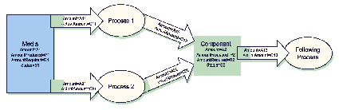
|
3.10.5 Description of Partitioned Resources
Printing workflows contain a number of Processes that are repeated over a potentially large number of individual files, Sheets, surfaces or separations. In order to define a Partitioned Resource in a concise manner without having to create a large number of individual Nodes and Resources, a set of Resources might be Partitioned by factoring them by one or more Attributes. The common Elements and defaults are placed in the parent Element while Partition-specific Attributes and overrides are placed in the child Elements. This saves space. Also, by providing a single parent ID for the Resources, it allows easy access to the entire Resource or iteration over each part.
To reference part of a Resource, a ResourceLink references the parent Resource and supplies a Part Element that contains an actual value for a Partition. The result is all the child Elements with matching Partition values, including common values and defaults from the parent Resource. If PartUsage = "Implicit" , the parent Attributes are returned if there is no matching Partition.
A Partitioned Resource may contain nested Elements, each with the same name as the Partitioned Resource root. The part-independent Resource Elements and Attributes are located in the root of the Resource, while the Partition-dependent Elements are located in the nested Elements. Thus one individual part is defined by the convolution of the Partition-independent Elements and Attributes with the Elements and Attributes contained in the appropriate nested Elements. The Attributes of nested part Elements are overwritten by the equivalent Attributes in descendant Elements.
Some Processes will enumerate a Resource in XML order and use its Partition Key values and actually set the values of those Partition Keys during its processing. Other Processes will treat the Resource as a random access Resource and look up leaf Nodes based on the current settings of PartIDKeys values. For example, the RunList Resource can be used by the Imposition Process to define key values (such as the Run Partition Key during consumption of the RunList , and the Layout Resource uses Partitioning to define a set of templates chosen based on the current content from the RunList being processed.
3.10.5.1 Subelements in Partitioned Resources
Subelements of a Partitioned Resource are inherited by a descendant Element if and only if no equivalent Subelements exist in the descendant Element. Subelements are completely replaced by those in descendant Elements even if cardinality of the Subelement allows multiple occurrences.
Example 3-12: Inheritance for Subelements of a Partitioned Resource
For example, the following SeparationSpec is two color duo-tone (only Black and SpotGreen ) in the part with PageNumber = " 1 ". For additional examples and restrictions, see also Section 7.2.109.12.1.2, “Position of PlacedObject Elements in Layout” which contains Example 7-25 and Example 7-26.
<JDF xmlns="http://www.CIP4.org/JDFSchema_1_1" ID="A1" Status="Waiting"
Type="ProcessGroup" JobPartID="ID300" Version="1.4">
< LayoutElement Class = "Parameter" ID = "ID1" PartIDKeys = "PageNumber"
< SeparationSpec Name = "Cyan" />
< SeparationSpec Name = "Magenta" />
< SeparationSpec Name = "Yellow" />
< SeparationSpec Name = "Black" />
< LayoutElement PageNumber = "0" />
< LayoutElement PageNumber = "1" >
<!-- These two SeparationSpec Elements completely replace the
< SeparationSpec Name = "Black" />
< SeparationSpec Name = "SpotGreen" />
<LayoutElementLink Usage="Input" rRef="ID1"/>
3.10.5.2 Amount in Partitioned Resources
The Amount Attribute of a Partitioned Resource is treated formally exactly in the same manner as any other Attribute. This implies that the amount specified refers to the amount defined by one leaf and not to the amount defined by the sum of leaves in a branch. The Amount Attribute defined in the example below is, therefore, two, even though 24 physical plates are described.
Example 3-13: Partitioned ExposedMedia
The following example defines two sets of 12 plates for two Sheets with three surfaces. Each has a common brand Attribute called “Gooey”. Each individual separation has its own ProductID . Furthermore, the Status Attribute varies from part to part. For example, if a yellow plate breaks, only it will need to be remade and, therefore, set to Unavailable ; the others, meanwhile, can remain Available .
<JDF xmlns="http://www.CIP4.org/JDFSchema_1_1" ID="A1" Status="Waiting"
Type="ProcessGroup" JobPartID="ID300" Version="1.4">
< ExposedMedia Amount = "2" Brand = "Gooey" Class = "Handling" ID = "L1"
PartIDKeys = "SheetName Side Separation" Status = "Available" >
< Media Dimension = "500 600" MediaType = "Plate" />
< ExposedMedia SheetName = "S1" >
< ExposedMedia Side = "Front" >
< ExposedMedia ProductID = "S1FCPlateJ42" Separation = "Cyan" />
< ExposedMedia ProductID = "S1FMPlateJ42" Separation = "Magenta" />
< ExposedMedia ProductID = "S1FYPlateJ42" Separation = "Yellow"
< ExposedMedia ProductID = "S1FKPlateJ42" Separation = "Black" />
< ExposedMedia Side = "Back" >
< ExposedMedia ProductID = "S1BCPlateJ42" Separation = "Cyan" />
< ExposedMedia ProductID = "S1BMPlateJ42" Separation = "Magenta" />
< ExposedMedia ProductID = "S1BYPlateJ42" Separation = "Yellow" />
< ExposedMedia ProductID = "S1BKPlateJ42" Separation = "Black" />
< ExposedMedia SheetName = "S2" >
< ExposedMedia Side = "Front" >
< ExposedMedia ProductID = "S2FCPlateJ42" Separation = "Cyan" />
< ExposedMedia ProductID = "S2FMPlateJ42" Separation = "Magenta" />
< ExposedMedia ProductID = "S2FYPlateJ42" Separation = "Yellow" />
< ExposedMedia ProductID = "S2FKPlateJ42" Separation = "Black" />
<ExposedMediaLink Usage="Input" rRef="L1"/>
3.10.5.3 Relating PartIDKeys and Partitions
The PartIDKeys Attribute (see Section 3.10.6, “PartIDKeys Attribute and Partition Keys”) describes the Partition Keys that occur in a Partitioned Resource. The sequence and number of keys is restricted in order and cardinality to ensure interoperability. The first entry in the PartIDKeys list defines the Partition closest to the root, the next entry defines the next intermediate Partition Node and so forth until the last entry, which defines the Partition leaves. Each Partition Key must occur exactly once in the PartIDKeys list. Note that some of the restrictions specified in this section were assumed to be in place in versions before JDF 1.2 but were not explicitly stated in the specification.
Example 3-14: Legal Incomplete Partition
The following example demonstrates a legal incomplete Partition. It is incomplete because the Preview that is Partitioned by PreviewType = " ThumbNail " is not also Partitioned by Separation . It is legal because the omitted key Separation is at the end of the PartIDKeys list:
<JDF xmlns="http://www.CIP4.org/JDFSchema_1_1" ID="A1" Status="Waiting"
Type="ProcessGroup" JobPartID="ID300" Version="1.4">
< Preview Class = "Parameter" ID = "P1" PartIDKeys = "PreviewType Separation"
URL = "File:///aaa.pdf" Status = "Available" >
< Preview PreviewType = "Separation" >
< Preview Separation = "Cyan" />
< Preview Separation = "Magenta" />
< Preview PreviewType = "ThumbNail" />
Example 3-15: Illegal Incomplete Partition
The following example demonstrates an illegal incomplete Partition since the omitted keys are not at the end of the PartIDKeys list:
< Preview Class = "Parameter" ID = "P2" PartIDKeys = "PreviewType Separation"
< Preview Separation = "Cyan" />
Example 3-16: Legal Complete Partition
The following example demonstrates a legal Partition:
<JDF xmlns="http://www.CIP4.org/JDFSchema_1_1" ID="A1" Status="Waiting"
Type="ProcessGroup" JobPartID="ID300" Version="1.4">
< Preview Class = "Parameter" ID = "P3" PartIDKeys = "PreviewType Separation"
URL = "File:///aaa.pdf" Status = "Available" >
< Preview PreviewType = "Separation" >
< Preview Separation = "Cyan" />
Example 3-17: Illegal Partition
The following example demonstrates an illegal Partition since more than one Partition Key is specified in the leaf, namely, PreviewType and Separation :
< Preview Class = "Parameter" ID = "P4" PartIDKeys = "PreviewType Separation"
URL = "File:///aaa.pdf" Status = "Available" >
Example 3-18: Degenerate Partition
The following example specifies that only " c1 " be folded:
<JDF xmlns="http://www.CIP4.org/JDFSchema_1_1" ID="A1" Status="Waiting"
Type="Folding" JobPartID="ID300" Version="1.4">
< Component Class = "Quantity" ID = "c1" PartIDKeys = "SheetName" Status = "Available"
< Component SheetName = "Sheet 1" />
< Component Class = "Quantity" ID = "c2" PartIDKeys = "SheetName" Status = "Available"
< Component SheetName = "Sheet 2" />
< FoldingParams Class = "Parameter" ID = "fold" NoOp = "true" PartIDKeys = "SheetName"
< FoldingParams NoOp = "false" SheetName = "Sheet 1" />
<FoldingParamsLink Usage="Input" rRef="fold"/>
<ComponentLink Usage="Input" rRef="c1"/>
Example 3-19: Invalid Degenerate Partition
The Component Elements in the following example are NOT valid:
< Component Class = "Quantity" ID = "c12" PartIDKeys = "SheetName" SheetName = "Sheet 1"
Status = "Available" ComponentType = "Sheet" />
< Component Class = "Quantity" ID = "c22" PartIDKeys = "SheetName" SheetName = "Sheet 2"
Status = "Available" ComponentType = "Sheet" />
< FoldingParams Class = "Parameter" ID = "fold2" NoOp = "true" PartIDKeys = "SheetName"
< FoldingParams NoOp = "false" />
3.10.5.4 Partitioning of Resource Subelements
Only Resources can be Partitioned. If a Resource contains Subelements, the Subelements must not be Partitioned. Subelements must always be specified completely in that part where they occur. The content of Subelements is not convoluted with the content of Subelements in parts closer to the root. Five examples are provided below. The first and the fourth example are valid, the second, third and fifth are invalid.
Example 3-20: Partitioned ExposedMedia with Media Subelements
In the first example, the ExposedMedia Resource is Partitioned.
<JDF xmlns="http://www.CIP4.org/JDFSchema_1_1" ID="A1" Status="Waiting"
Type="ProcessGroup" JobPartID="ID300" Version="1.4">
< ExposedMedia Class = "Handling" ID = "L1" PartIDKeys = "Separation"
< Media Brand = "foo" MediaType = "Film" />
< ExposedMedia Separation = "Cyan" />
< ExposedMedia Separation = "Magenta" >
< Media Brand = "bar" MediaType = "Film" />
Example 3-21: Partitioned ExposedMedia with Incomplete Media Subelements
In this incomplete example, the Media in the leaves is not complete because it does not contain the MediaType Attribute. MediaType is not inherited from the Media Element in the root Resource because in this case Media is not the Partitioned Resource.
< ExposedMedia Class = "Handling" ID = "L21" PartIDKeys = "Separation" Status = "Available" >
< ExposedMedia Separation = "Cyan" >
< ExposedMedia Separation = "Magenta" >
Example 3-22: Partitioned ExposedMedia with Invalid Partitioning of Media Subelements
In this invalid example, Media is a Subelement that must not be Partitioned.
< ExposedMedia Class = "Handling" ID = "L31" PartIDKeys = "Separation" Status = "Available" >
< Media Brand = "foo" Separation = "Cyan" />
Example 3-23: Partitioned ExposedMedia with MediaRef Subelements
Partitioning may be combined with inter-Resource links, (i.e., ResourceRef Elements.) In the following valid example, each MediaRef is equivalent to an in-lined leaf with the explicit Part Elements to define the Partition, (i.e., it is equivalent to the valid Example 3-20.)
<JDF xmlns="http://www.CIP4.org/JDFSchema_1_1" ID="A1" Status="Waiting"
Type="ProcessGroup" JobPartID="ID300" Version="1.4">
< Media Class = "Consumable" ID = "MediaID" MediaType = "Film" PartIDKeys = "Separation"
< Media Brand = "foo" Separation = "Cyan" />
< Media Brand = "bar" Separation = "Magenta" />
< ExposedMedia Class = "Handling" ID = "L41" PartIDKeys = "Separation"
< ExposedMedia Separation = "Cyan" >
<!--equivalent to <Media MediaType="Film" Brand="foo"/> -->
< ExposedMedia Separation = "Magenta" >
<!--equivalent to <Media MediaType="Film" Brand="bar"/> -->
< Part Separation = "Magenta" />
Example 3-24: Partitioned ExposedMedia with Invalid MediaRef Subelements
In this invalid example, MediaRef does not reference the leaves of Media but, rather, to the root of Media . It is equivalent to the invalid Example 3-22.
<JDF xmlns="http://www.CIP4.org/JDFSchema_1_1" ID="A1" Status="Waiting"
Type="ProcessGroup" JobPartID="ID300" Version="1.4">
< Media Class = "Consumable" ID = "MediaID2" MediaType = "Film"
PartIDKeys = "Separation" Status = "Available" >
< Media Brand = "foo" Separation = "Cyan" />
< Media Brand = "bar" Separation = "Magenta" />
< ExposedMedia Class = "Handling" ID = "L51" PartIDKeys = "Separation"
< MediaRef rRef = "MediaID2" />
<ExposedMediaLink Usage="Input" rRef="L51"/>
3.10.5.5 Logical Partitions and the Identical Element
Partitioning is a mechanism for describing a complete set of similar Resources, but always leads to a tree structure of Resources. Sometimes it is necessary to describe a set of Resources that are not a tree, but where some Partitions of the set are 'identical' to another Partition. A set of ExposedMedia Resources where the same plate for the separation ' CompanySpot ' is reused for all Sheets is a practical example.
3.10.5.5.1 Element: Identical
Any Partitioned Resource may contain an Identical Subelement. The Resource Partition containing the Identical Element is called the logical Partition or slave Partition. Linking a logical Partition using a ResourceLink or referencing a logical Partition using a ResourceRef is semantically the same as linking/referencing the master Partition.
All Attributes except for the Attributes specified in PartIDKeys and all Subelements of the Resource (see Section 3-10, “Abstract Resource Element” ) specified or inherited in the logical Partition must be ignored and replaced by the Attributes and Subelements of the master Partition.
|
Identifies the physical Partition which will be used instead of the logical Partition. The logical Partition is defined by the Resource Partition containing the Identical Element. |
Example 3-25: Partitioning with the Identical Element
In the following example the back side of Sheet S2 is identical to the back side of Sheet S1:
<JDF xmlns="http://www.CIP4.org/JDFSchema_1_1" ID="A1" Status="Waiting"
Type="ProcessGroup" JobPartID="ID300" Version="1.4">
< ExposedMedia Class = "Handling" ID = "L1" PartIDKeys = "SheetName Side Separation"
< Media Class = "Consumable" MediaType = "Film" />
< ExposedMedia SheetName = "S1" >
< ExposedMedia Side = "Front" >
< ExposedMedia ProductID = "1" Separation = "Cyan" />
< ExposedMedia ProductID = "2" Separation = "Magenta" />
< ExposedMedia ProductID = "3" Separation = "Yellow" />
< ExposedMedia ProductID = "4" Separation = "Black" />
<!-- Master partition that is referenced by an Identical Element -->
< ExposedMedia Side = "Back" >
< ExposedMedia ProductID = "5" Sep a ration= "Cyan" />
< ExposedMedia ProductID = "6" Separation = "Magenta" />
< ExposedMedia ProductID = "7" Separation = "Yellow" />
< ExposedMedia ProductID = "8" Separation = "Black" />
< ExposedMedia SheetName = "S2" >
< ExposedMedia Side = "Front" >
< ExposedMedia ProductID = "9" Separation = "Cyan" />
< ExposedMedia ProductID = "10" Separation = "Magenta" />
< ExposedMedia ProductID = "11" Separation = "Yellow" />
< ExposedMedia ProductID = "12" Separation = "Black" />
<!-- Logical partition with an Identical Element -->
< ExposedMedia Side = "Back" >
< Part SheetName = "S1" Side = "Back" />
<ExposedMediaLink Usage="Input" rRef="L1">
<Part SheetName="S2" Side="Back" Separation="Black"/>
3.10.5.5.2 Restrictions when using Identical Elements
The Identical Element must contain exactly one Part Subelement, which identifies the physical or master Partition that is identical to the logical Partition.
The logical Partition must have no other Subelements than the Identical Element and no additional Attributes other than those specified by PartIDKeys .
The master Partition identified by Identical / Part must be either a Partition leaf or at the same Partition level of the logical Partition. Such a master Partition MUST NOT contain an Identical element. In this way, the logical Partition obeys the rules described in Section 3.10.5.3, “Relating PartIDKeys and Partitions”.
Example 3-26: ResourceLink with Part Element
The ExposedMedia example above is valid, because both the logical and physical Partition level equals the Side Partition level. The following ResourceLink illustrates a valid Partition sequence:
<JDF xmlns="http://www.CIP4.org/JDFSchema_1_1" ID="A1" Status="Waiting"
Type="ProcessGroup" JobPartID="ID300" Version="1.4">
<ExposedMedia Class="Handling" ID="L1" PartIDKeys="SheetName Side Separation"
<Media Class="Consumable" MediaType="Film"/>
<ExposedMedia ProductID="1" Separation="Cyan"/>
<ExposedMedia ProductID="2" Separation="Magenta"/>
<ExposedMedia ProductID="3" Separation="Yellow"/>
<ExposedMedia ProductID="4" Separation="Black"/>
<!-- Master partition that is referenced by an Identical Element -->
<ExposedMedia ProductID="5" Separation="Cyan"/>
<ExposedMedia ProductID="6" Separation="Magenta"/>
<ExposedMedia ProductID="7" Separation="Yellow"/>
<ExposedMedia ProductID="8" Separation="Black"/>
<ExposedMedia ProductID="9" Separation="Cyan"/>
<ExposedMedia ProductID="10" Separation="Magenta"/>
<ExposedMedia ProductID="11" Separation="Yellow"/>
<ExposedMedia ProductID="12" Separation="Black"/>
<!-- Logical partition with an Identical Element -->
<Part SheetName="S1" Side="Back"/>
< ExposedMediaLink Usage = "Input" rRef = "L1" >
< Part SheetName = "S2" Side = "Back" Separation = "Black" />
Example 3-27: Partitioning with an Invalid Identical Element
This example illustrates an INVALID logical Partition, because logical and physical Partition level are not equal and the physical Partition level is not a leaf.
< ExposedMedia Class = "Handling" ID = "L2" PartIDKeys = "SheetName Side Separation"
< ExposedMedia SheetName = "S1" >
< ExposedMedia Side = "Front" >
< ExposedMedia ProductID = "1" Separation = "Cyan" />
< ExposedMedia ProductID = "2" Separation = "Magenta" />
< ExposedMedia ProductID = "3" Separation = "Yellow" />
< ExposedMedia ProductID = "4" Separation = "Black" />
< ExposedMedia Side = "Back" >
< ExposedMedia ProductID = "5" Separation = "Cyan" />
< ExposedMedia ProductID = "6" Separation = "Magenta" />
< ExposedMedia ProductID = "7" Separation = "Yellow" />
< ExposedMedia ProductID = "8" Separation = "Black" />
< ExposedMedia SheetName = "S2" >
< ExposedMedia Side = "Front" >
< ExposedMedia ProductID = "9" Separation = "Cyan" >
<!--This Identical is invalid because it references from a Separation
partition to a Surface partition -->
< Part SheetName = "S1" Side = "Back" />
3.10.6 PartIDKeys Attribute and Partition Keys
3.10.6.1 Partitionable Resource
In addition to the usual Resource Attributes and Elements, the Partitionable Resource Element has Partition-specific Attributes and Elements in its root. Specifying PartIDKeys in the root defines a Partitioned Resource. Throughout this document, the term “Partition Key” (depending on the context) refers to either
< ExposedMedia PartIDKeys = "Side" ...>
< ExposedMedia Side = "Front" ...>
- can reference a Partition from within a Part Element, e.g. Side
< ExposedMediaLink rRef = "XM" ...>
Further Attributes that apply to Partitioned Resources are listed in the following table.
|
List of Attribute names that are used to separate the individual parts. PartIDKeys also defines the sequence from root to leaf in which the PartIDKeys must occur in the Partitioned Resource. Each entry in the PartIDKeys list must occur only once. PartIDKeys must not be specified below the root of a Partitioned Resource. For details, see Table 3-28, “Part Element” . Modification note: before JDF 1.4, Part / @Sorting and Part / @SortAmount were not valid values of PartIDKeys . Now they have been deprecated so all values of PartIDKeys are also Elements of Part . Values are: |
||||
|
Defines the granularity of a dynamic pipe for a Partitioned Resource. For instance, if a Resource were Partitioned by Sheet, surface and separation (i.e. Resource /@ PartIDKeys = "SheetName Side Separation" ) and if the ResourceLink /@ PipePartIDKeys = "SheetName Side" , then pipe requests would be issued only once per surface. The contents of PipePartIDKeys must be a subset of the PartIDKeys Attribute of the Resource that is linked by this ResourceLink . Default value is from: PartIDKeys , (i.e., maximum granularity.) PipePartIDKeys must not be specified below the root of a Partitioned Resource. For details on Partitioned Resources, see Section 3.10.5, “Description of Partitioned Resources” . |
||||
|
Cross reference to a logical Partition. For details on logical Partitions and the Identical Element, see Section 3.10.5.5, “Logical Partitions and the Identical Element”. |
||||
|
Resource * |
Nested Resource Elements that contain the appropriate Partition Keys as specified in PartIDKeys . These Elements must be of the same name and type as the root Resource Element. They represent the individual parts or groups of parts. |
|||
3.10.6.2 Element: Part
Partitionable Resources are uniquely identified by the Attribute Values listed in PartIDKeys Attributes. The choice of which Attributes to use depends on how the Agent organizes the Job.
The following table lists the content of a Part Element, which contains a set of Attributes that have a well described meaning. Each of the Attributes, except Sorting , may be used in the nested Resource Elements of Partitioned Resources as the Partition Key (see example above).
Part Elements match a given Partition when all of the Attributes of a Part Element match the Attributes of the referenced Resource. This corresponds to Boolean AND operation. Note that a Part Element may specify a subset of the Partition Keys (e.g., only lower level Partition Keys) and thus implicitly select multiple Partitions leaves or Nodes from a Partitioned Resource (see Section 3.10.7.4, “Implicit, Sparse and Explicit PartUsage in Partitioned Resources”). If multiple Part Elements are specified, the result is a Boolean OR of the multiple parts. A Part Element with no Attributes explicitly references the root Resource.
Some Attributes of Part ( Separation , SheetName , SignatureName ) have a data type of string. Future versions of this specification may restrict the data type to NMTOKEN. Therefore implementations SHOULD write values as NMTOKEN. Compliant implementations MUST be capable of reading string values.
|
Name of the BinderySignature used in a StrippingParams description. |
||
|
Identifies a CutBlock from a Cutting Process. The value of this Attribute must match the value of the BlockName Attribute of a CutBlock . |
||
|
The BundleItemIndex Attribute selects a set of BundleItem Elements from a Component Resource. |
||
|
Index of SignatureCell Elements in a StrippingParams or BinderySignature . SignatureCell Elements are counted starting from lower left. Each row is indexed from left to right before moving up to the next row. |
||
|
The Condition Attribute was added to JDF 1.2 to allow users of JDF-enabled systems to define and track different kinds of waste for improved error reporting and production statistics. Values include those from: Table 3-29, “Condition Attribute Values”. |
||
|
Specifies a hierarchical manifest of delivery packages where DeliveryUnit0 specifies the most granular bundle. DeliveryUnit<N+1> specifies the next most granular bundle in packing after DeliveryUnit<N> . Bundles can be packaged with varying numbers of products. DeliveryUnit<N+1> must occur before DeliveryUnit<N> in PartIDKeys. |
||
|
Identifies a set of document copies to which the Partition applies. DocCopies is a logical reference that is independent of the RunList structure and must not be used as an explicit Partition Key for RunList Resources. |
||
|
The DocIndex Attribute selects a set of logical Instance Documents from a RunList Resource. DocIndex is a logical reference that is independent of the RunList structure and must not be used as an explicit Partition Key for RunList Resources. |
||
|
The DocRunIndex Attribute selects a set of logical pages from Instance Documents of a RunList Resource. For example, DocRunIndex = "0 -1" specifies the first and last page of every copy of every selected Instance Document (assuming that additional Partitioning using DocCopies and/or DocIndex is not also specified). DocRunIndex is a logical reference that is independent of the RunList structure and must not be used as an explicit Partition Key for RunList Resources. The index always refers to entries of the entire RunList and must not be modified if only a part of the RunList is spawned. Specifying DocRunIndex does not modify the index of a RunList entry and therefore does not reposition pages on a Layout . |
||
|
The DocSheetIndex Attribute selects a set of logical Sheets from individual Instance Documents. For example DocSheetIndex = "0 -1" specifies the first and last Sheet of every selected copy of every Instance Document (assuming that additional Partitioning using DocCopies and/or DocIndex is not also specified). DocSheetIndex is a logical reference that is independent of the RunList structure and must not be used as an explicit Partition Key for RunList Resources. The index always refers to entries of the entire RunList and must not be modified if only a part of the RunList is spawned. Specifying DocSheetIndex does not modify the index of a RunList entry and therefore does not reposition pages on a Layout . |
||
|
List of tags of documents in a multi-document RunList . Used to Partition Resources that are linked from Processes that also have a RunList as input. The Partition is selected if the implied, i.e., from the PDL, value of the document in the RunList matches any of the entries in DocTags Note that being a multi-set RunList implies being a multi-document RunList as well. Modification note: starting with JDF 1.4, the data type was expanded from NMTOKENS to NameRangeList. |
||
|
An Edition addresses a subset of a published product, e.g., newspaper issue. The content of all copies of one edition is the same. Usually, an edition is published for a specific region and/or publishing time, e.g. Asia/Europe edition or Morning/Evening edition. |
||
|
An edition version is an optional subset of a single edition. In order to ship inserts, editions might be subdivided into edition versions. |
||
|
Zero-based position index of the fountain. Used to Partition fountains along the axis of a roller; can be used for Web Printing. |
||
|
List of items to select from a Bundle . |
||
|
The LayerIDs Attribute selects a set layers that are defined by LayerID . |
||
|
Name of the location, (e.g., in MIS). This part key allows to describe distributed Resources. Note that this name does not define the location by itself. See Section 3.10.6.4, “Locations of Physical Resources” for details on specifying locations. Values include those from: Table C-21, “Input Tray and Output Bin Names” . |
||
|
Option of an RFQ. Used mainly in Intent Resource s. |
||
|
Metadata extracted from a PDL using RunList / MetadataMap Elements. See Section 7.2.160.2, “MetadataMap”. |
||
|
Page number in a Component or document, (e.g., FileSpec that is not described as a RunList ). References an index in a PageList . |
||
|
List of tags of pages in a multi-page RunList . Used to Partition Resources that are linked from Processes that also have a RunList as input. The Partition is selected if the implied, i.e., from the PDL, value of the page in the RunList matches any of the entries in PageTags. Modification note: starting with JDF 1.4, the data type was expanded from NMTOKENS to NameRangeList. |
||
|
Version identifier, (e.g., the language version of a catalog). Compatibility note: The data type of PartVersion was changed from string to NMTOKENS in JDF 1.3 in order to accommodate Resources that contain Elements from multiple versions, e.g. Sheets with two language versions. |
||
|
Identifier of a single plate layout (mainly used for newspaper processes, where multiple plates are needed for one cylinder) |
||
|
Definition of the specific parts of a PreflightReportRulePool / PRRule used in preflight applications. |
||
|
Constraint: If both PreviewType and Preview /@ PreviewUsage or PreviewGenerationParams /@ PreviewUsage are specified, they must match. SeparatedThumbNail - Very low resolution separated preview. Separation - Separated preview in medium resolution. SeparationRaw - Separated preview in medium resolution with no compensation. New in JDF 1.2 |
||
|
A string that uniquely identifies each ribbon. Multiple ribbons are created out of one Web after dividing in case of Web Printing. |
||
|
The Run Attribute selects an individual RunList Partition from a RunList Resource. |
||
|
The RunIndex Attribute selects a set of logical pages from a RunList Resource in a manner that is independent from the internal structure of the RunList . It contains an array of mixed ranges and individual indices separated by whitespace. Each range consists of two indices connected with a tilde (~). For example, RunIndex = "2 ~ 5 8 10 22 ~ -1" . Negative numbers reference pages from the back of a file in base-1 counting. In other words, -1 is the last page, -2 the second to last, etc. Thus RunIndex = "0 ~ -1" refers to a complete range of pages, from first to last. RunIndex is a logical reference that is independent of the RunList structure and must not be used as an explicit Partition Key for RunList Resources. The index always refers to entries of the entire RunList and must not be modified if only a part of the RunList is spawned. Specifying RunIndex does not modify the index of a RunList entry and therefore does not reposition pages on a Layout . |
||
|
Zero-based page number. Used when a document/file-based RunList is broken down into a page based RunList . For instance, a 2-page document RunList : < RunList URL = "doc.pdf" (...)/> < RunList PartIDKeys = "RunPage" (...)> < RunList URL = "doc_page0.pdf" |
||
|
Used when splitting RunList Resources into larger chunks that are not yet based on PageList indices. |
||
|
Generic group of Elements in a RunList . If Partitioning a RunList by RunSet and Run , then RunSet should be specified closer to the root. |
||
|
List of names in a named RunList . Used to Partition Resources that are linked from Processes that also have a RunList as input when the sequence of the RunList is undefined. The Partition is selected if the explicit or implied (e.g., from the PDL) value of RunTag of the RunList matches any of the entries in RunTags . Note: the difference between RunTags and PageTags , DocTags or SetTags . PageTags is used to identify classes of individual pages having differing JDF parameterization. Similarly, DocTags is used to identify classes of individual documents and SetTags is used to identify classes of individual sets each having differing JDF parameterization. RunTags is used to identify collections of pages, often thought of as a document or a piece of a document, but not limited to that. Also, RunTags may be explicitly set for an entire RunList by use of the RunTag Attribute. The SetTags , DocTags and PageTags Partition Keys are always set implicitly and always refer to the granularity within a RunList implied by their names. Modification note: starting with JDF 1.4, the data type was expanded from NMTOKENS to NameRangeList. |
||
|
Identifies the separation name. Composite - Non-separated Resource. Separated - The Resource is separated, but the separation definition is handled internally by the Resource, such as a PDF file that contains SeparationInfo dictionaries. Red - Additional process color. Green - Additional process color. Blue - Additional process color. Orange - Additional process color. Spot - Generic spot color. Used when the exact nature of the spot color is unknown. Note: other values include any separation name defined in the Name Attribute of a Color Element in the ColorPool . Note: when Separation is applied to a ColorantControlLink , it defines an implicit Partition that selects a subset of separations for the Process that is described by the ColorantControl . For details, see Section 7.2.28, “ColorantControl” . |
||
|
The SetDocIndex Attribute selects a set of logical Instance Documents from Instance Document Sets of a RunList Resource. For example, SetDocIndex = "0 -1" specifies the first and last page of every copy of every selected Instance Document Set. SetDocIndex is a logical reference that is independent of the RunList structure and must not be used as an explicit Partition Key for RunList Resources. The index always refers to entries of the entire RunList and must not be modified if only a part of the RunList is spawned. Specifying SetDocIndex does not modify the index of a RunList entry and therefore does not reposition pages on a Layout . |
||
|
The SetIndex Attribute selects a set of logical Instance Document Sets from a RunList Resource. SetIndex is a logical reference that is independent of the RunList structure and must not be used as an explicit Partition Key for RunList Resources. The index always refers to entries of the entire RunList and must not be modified if only a part of the RunList is spawned. Specifying SetIndex does not modify the index of a RunList entry and therefore does not reposition pages on a Layout . |
||
|
The SetRunIndex Attribute selects a set of logical pages from in-stance Document Sets of a RunList Resource. For example, SetRunIndex = "0 -1" specifies the first and last page of every copy of every selected Instance Document Set. SetRunIndex is a logical reference that is independent of the RunList structure and must not be used as an explicit Partition Key for RunList Resources. The index always refers to entries of the entire RunList and must not be modified if only a part of the RunList is spawned. Specifying SetRunIndex does not modify the index of a RunList entry and therefore does not reposition pages on a Layout . |
||
|
The SetSheetIndex Attribute selects a set of logical Sheets from individual sets of Instance Documents. For example SetSheetIndex = "0 -1" specifies the first and last Sheet of every selected copy of every set. SetSheetIndex is a logical reference that is independent of the RunList structure and must not be used as an explicit Partition Key for RunList Resources. The index always refers to entries of the entire RunList and must not be modified if only a part of the RunList is spawned. Specifying SetSheetIndex does not modify the index of a RunList entry and therefore does not reposition pages on a Layout . |
||
|
List of tags of pages in a multi-set RunList . Used to Partition Resources that are linked from Processes that also have a RunList as input. The Partition is selected if the implied, i.e., from the PDL, value of the set in the RunList matches any of the entries in SetTags. Modification note: starting with JDF 1.4, the data type was expanded from NMTOKENS to NameRangeList. |
||
|
The SheetIndex Attribute selects a set of logical Sheets from a RunList Resource either implicitly or explicitly Partitioned by SheetIndex . SheetIndex is only valid when a RunList is describing sheet/surfaces. |
||
|
Denotes the side of the Sheet. If Side is specified, the Part Element refers to one surface of the Sheet. If it is not specified, it refers to both sides. In case of Web Printing, Front is a synonym for the upper side and Back for the down side of the Web. |
||
|
A string that uniquely identifies the Signature within the Partitioned Resource. |
||
|
Mapping from the implied Partitioned Resource order to a Process order. The indices refer to the Elements of the complete Partitioned Resource, not to the index in the selection of parts defined by the Part Element. If not specified the part order is the same as the sorting order. Sorting must not be used as a Partition Key. Note: Sorting and SortAmount are semantically different from the other Attributes in this table as they define the ordering of parts, whereas the other Attributes define the selection of parts. Deprecation note: the order of the Part Elements contained in a ResourceLink is significant, and selects each specified subset of the Resource in the XML order of the Part Elements. |
||
|
If a sorted Resource has an Amount Attribute and SortAmount = true , each Resource must be processed completely. If SortAmount = false (the default), each Part Element must be processed the number of times specified in the Amount Attribute before starting the next Part . |
||
|
The name of the 1-up design in a DieLayout . |
||
|
Defines individual sub-runs in a Production Run. For instance, Media might vary over the duration of a longer run. The variation might be only stock numbers, but physical characteristics might also vary. |
||
|
XYPair of integer values that identifies the tile. Tiles are identified by their X and Y indexes. Values are zero-based and expressed in the PS coordinate system. So "0 0" is the lower left tile and "1 0" is the tile next to it on the right. Tile Resources are described in detail in the Section 7.2.186, “Tile”. In JDF 1.3 and beyond, TileID should not be used to specify multiple plates per cylinder. Instead the new Resource CylinderLayout should be used. |
||
|
Name of a product that will be produced on a Web Press. Multiple WebProducts MAY be produced simultaneously on one Web Press. |
||
|
Defines one setup of a Web Press that MAY produce multiple WebProducts. |
-- Attribute: Condition
|
Excess Component Resource(s) that were produced by running the Device after the specified amount has been produces. |
|
|
Like Good above, but where “xxx” can be the name of any JDF Process, (e.g., "FeedingGood" , "TrimmingGood" , etc.). In the case of a Combined Process or Process Group, the name of the last JDF Process in the Process chain is used. |
|
|
Like Waste above, but where “xxx” can be the name of any JDF Process, (e.g., "FeedingWaste" , "TrimmingWaste" , etc.). In the case of a Combined Process or Process Group, the name of the last JDF Process in the Process chain is used. |
|
|
This Partition identifies Media that was consumed as specified by InsertSheet /@ SheetType = "AccountingSheet" , "ErrorSheet" , "JobSheet" or "SeparatorSheet" . |
|
|
Failed binding quality test. The Component Resource(s) with this Condition belong to the batch of Component Resource(s) that did not pass the test. |
|
|
Passed binding quality test. The Component Resource(s) with this Condition belong to the batch of Component Resource(s) that passed the test but were not destroyed in the Process. |
|
|
Passed binding quality test. The Component Element(s) with this Condition belong to the batch of Component Element(s) that passed the test but were destroyed in the Process. |
|
|
Waste by the attempted use of an incorrect components, (for example on a feeder.) |
|
3.10.6.3 Options in Intent Resources
JDF defines Option as a Partition Key in order to specify multiple options, (e.g., for multiple quotes in a non-redundant manner). A ResourceLink that links to a Resource with an Option Partition but has no Part Element to choose the Option defaults to the root Resource.
3.10.6.4 Locations of Physical Resources
Unlike other kinds of Resources, Physical Resource s can be stored at multiple, distributed locations. This is specified by including a Location Element in the Resource Element. A Location Partition Key is provided to define multiple locations of one Resource. The Partition Key carries no semantic meaning and does not by itself define the name of a location.
Example 3-28: ExposedMedia with Location Elements
The following example describes a set of plates that are distributed over two locations. (Note: See Section C.5, “Input Tray and Output Bin Names” for additional detail on locating Physical Resource s.
<JDF xmlns="http://www.CIP4.org/JDFSchema_1_1" ID="A1" Status="Waiting"
Type="ProcessGroup" JobPartID="ID300" Version="1.4">
< ExposedMedia Class = "Handling" ID = "L1" PartIDKeys = "Location"
< ExposedMedia Amount = "42" Location = "dd1" >
< Location LocID = "PP_01234" LocationName = "Desk Drawer 1" />
< ExposedMedia Amount = "100" Location = "dd2" >
< Location LocID = "PP_01235" LocationName = "Desk Drawer 2" />
< ExposedMediaLink Amount = "50" Usage = "Input" rRef = "L1" >
Example 3-29: Media with Location Elements
The following example describes two different Media in the top and bottom tray of a LayoutPreparation Process. The Media is selected for the cover and inside pages respectively.
<JDF xmlns="http://www.CIP4.org/JDFSchema_1_1" ID="A1" Status="Waiting"
Type="ProcessGroup" JobPartID="ID300" Version="1.4">
< Media Class = "Consumable" ID = "TopMedia" Status = "Available" >
< Location LocationName = "Top" />
< Media Class = "Consumable" ID = "BottomMedia" Status = "Available" >
< Location LocationName = "Bottom" />
< LayoutPreparationParams Class = "Parameter" ID = "L1" PartIDKeys = "RunIndex"
Sides = "TwoSidedFlipY" Status = "Available" >
<!-- Partition that defines the first and last page of the document -->
< LayoutPreparationParams RunIndex = "0 1 -2 -1" >
< MediaRef rRef = "TopMedia" />
<!-- Partition that defines the inside pages of the document -->
< LayoutPreparationParams RunIndex = "2 ~ -3" >
< MediaRef rRef = "BottomMedia" />
<LayoutPreparationParamsLink Usage="Input" rRef="L1"/>
3.10.7 Linking to Resources
Modification note: starting with JDF 1.4, all text up to Section 3.10.7.3 is new and replaces now-deleted text that was present in JDF 1.3
A JDF Node can specify a reordering or subset of a Resource by including one or more Part Elements in the ResourceLink Element that links to that Resource. For details of the Part Element, please refer to Table 3-28, “Part Element”.
3.10.7.1 Linking to Subsets of Resources
Each ResourceLink / Part Element selects a subset of the Resource, where the aggregation of each selected subset (in the case of multiple ResourceLink / Part Elements) creates a “virtual” Resource that will then be used during Node processing. This feature is often useful to reproduce part of the Job described by a Node, as the default interpretation of the Part Elements maintains the context as if the Node had been executed without any ResourceLink Partitioning.
Example 3-30: Linking to Subsets of Resources
For instance, if an Imposition Process outputs multiple sheets, and each sheet has dynamic marks placed on the sheet based on the value of SheetIndex , selecting a single sheet to be processed by Imposition would produce that sheet using the original SheetIndex value. This example would generate the imposed sheet #5 followed by the imposed sheet #1, where all dynamic marks on both sheets retain the context in which SheetIndex would have been defined when processing the full RunList Resource.
<JDF xmlns="http://www.CIP4.org/JDFSchema_1_1" ID="A1" Status="Waiting"
Type="ProcessGroup" JobPartID="ID300" Version="1.4">
< RunList Class = "Parameter" ID = "SheetSurfacesGeneratedByImposition"
PartIDKeys = "SheetIndex" Status = "Available" >
< RunListLink rRef = "SheetSurfacesGeneratedByImposition" Usage = "Output" >
3.10.7.2 Reordering the Processing of Resources
ResourceLink Partitioning may also be used to reorder the processing order of content described by a RunList . This is done by using the RunList /@ IgnoreContext Attribute, which specifies which Part Element Partition Keys' Job context should be ignored during processing. For more information and an example of this, see RunList /@ IgnoreContext in Section 7.2.160, “RunList” and following the RunList table, see.Example 7-50, “RunList/MetadataMap”.
3.10.7.3 Handling Amount in a ResourceLink to a Partitioned Resource
The Amount specified in a ResourceLink to a Physical Resource specifies the sum of individual Resource Partitions. Individual amounts are specified in the PartAmount Elements of the AmountPool .
Example 3-31: @Amount in an ExposedMediaLink to a Partitioned ExposedMedia
The following example shows the ResourceLink that refers to Example 3-13, “Partitioned ExposedMedia” for a total of five plates.
<JDF xmlns="http://www.CIP4.org/JDFSchema_1_1" ID="A1" Status="Waiting"
Type="ProcessGroup" JobPartID="ID300" Version="1.4">
<ExposedMedia Class="Handling" ID="E1" PartIDKeys="SheetName Side Separation"
<Media Class="Consumable" MediaType="Film"/>
<ExposedMedia ProductID="1" Separation="Cyan"/>
<ExposedMedia ProductID="2" Separation="Magenta"/>
<ExposedMedia ProductID="3" Separation="Yellow"/>
<ExposedMedia ProductID="4" Separation="Black"/>
<!-- Master partition that is referenced by an Identical Element -->
<ExposedMedia ProductID="5" Separation="Cyan"/>
<ExposedMedia ProductID="6" Separation="Magenta"/>
<ExposedMedia ProductID="7" Separation="Yellow"/>
<ExposedMedia ProductID="8" Separation="Black"/>
<ExposedMedia ProductID="9" Separation="Cyan"/>
<ExposedMedia ProductID="10" Separation="Magenta"/>
<ExposedMedia ProductID="11" Separation="Yellow"/>
<ExposedMedia ProductID="12" Separation="Black"/>
<!-- Logical partition with an Identical Element -->
<Part SheetName="S1" Side="Back"/>
< ExposedMediaLink Usage = "Input" rRef = "E1" >
< Part Separation = "Cyan" SheetName = "S1" />
< Part Separation = "Magenta" SheetName = "S1" />
< Part Separation = "Cyan" SheetName = "S1" Side = "Front" />
< Part Separation = "Cyan" SheetName = "S1" Side = "Back" />
< Part Separation = "Magenta" SheetName = "S1" Side = "Front" />
< Part Separation = "Magenta" SheetName = "S1" Side = "Back" />
3.10.7.4 Implicit, Sparse and Explicit PartUsage in Partitioned Resources
The PartUsage Attribute defines how over-specialized ResourceLink Elements are resolved.
If PartUsage = "Explicit" , ResourceLink Elements that do not point to an explicitly defined Partition of a Resource are an error.
If PartUsage = "Implicit" , ResourceLink Elements that do not point to an explicitly defined Partition of a Resource refer to the closest matching Resource Partition, regardless of the existence of sibling Partitions with identical keys but mismatching values.
If PartUsage = "Sparse" , ResourceLink Elements that do not point to an explicitly defined Partition of a Resource refer to the closest matching Resource Partition, if no sibling Partitions with identical keys but mismatching values exist. If sibling Partitions with identical keys but mismatching values exist, ResourceLink Elements that do not point to an explicitly defined Partition of a Resource are in error.
Example 3-32: PartUsage in a Partitioned Resource
Table 3-30 below describes the behavior of the JDF example that follows. Table 3-30 shows the ProductID of the Resource Partition that is selected for various values of SheetName , Side , Separation and PartVersion for PartUsage = " Implicit ", " Explicit " and " Sparse ", respectively. Note the effects of the Identical Element in S2B .
Note: the example below has PartUsage = " Implicit " and explicit values for ExposedMediaLink / Part Attributes, but Table 3-30 above describes the behavior for all values of PartUsage and all values of ExposedMediaLink / Part . The example
<JDF xmlns="http://www.CIP4.org/JDFSchema_1_1" ID="A1" Status="Waiting"
Type="ProcessGroup" JobPartID="ID300" Version="1.4">
< ExposedMediaLink Usage = "Input" rRef = "XM_ID" >
< Part SheetName = "S1" Side = "Front" Separation = "Black" PartVersion = "Deutsch" />
< ExposedMedia Brand = "Gooey" Class = "Handling" ID = "XM_ID"
PartIDKeys = "SheetName Side Separation PartVersion"
PartUsage = "Implicit" ProductID = "Root" Status = "Available" >
< Media Dimension = "500 600" MediaType = "Plate" />
< ExposedMedia ProductID = "S1" SheetName = "S1" >
< ExposedMedia ProductID = "S1F" Side = "Front" >
< ExposedMedia ProductID = "S1FC" Separation = "Cyan" />
< ExposedMedia ProductID = "S1FM" Separation = "Magenta" />
< ExposedMedia ProductID = "S1FY" Separation = "Yellow" />
< ExposedMedia ProductID = "S1FK" Separation = "Black" >
< ExposedMedia ProductID = "S1FKD" PartVersion = "Deutsch" />
< ExposedMedia ProductID = "S1FKE" PartVersion = "English" />
< ExposedMedia ProductID = "S1B" Side = "Back" >
< ExposedMedia ProductID = "S1BC" Separation = "Cyan" />
< ExposedMedia ProductID = "S1BM" Separation = "Magenta" />
< ExposedMedia ProductID = "S1BY" Separation = "Yellow" />
< ExposedMedia ProductID = "S1BK" Separation = "Black" >
< ExposedMedia ProductID = "S1BKD" PartVersion = "Deutsch" />
< ExposedMedia ProductID = "S1BKE" PartVersion = "English" />
< ExposedMedia ProductID = "S2" SheetName = "S2" >
< ExposedMedia ProductID = "S2F" Side = "Front" >
< ExposedMedia ProductID = "S2FC" Separation = "Cyan" />
< ExposedMedia ProductID = "S2FM" Separation = "Magenta" />
< ExposedMedia ProductID = "S2FY" Separation = "Yellow" />
< ExposedMedia ProductID = "S2FK" Separation = "Black" />
< ExposedMedia Side = "Back" >
< Part SheetName = "S1" Side = "Back" />
3.10.7.5 Referencing Multiple Resources of the Same Type
Some Processes (e.g., Collecting , Gathering ) allow multiple Input Resources of the same type. These multiple Input Resources may be represented by multiple individual Resources or by Partitioned Resources or by a mixture of both. If ordering is significant, the order of the leaves in a Partitioned Resource defines said ordering. Example 3-33 and Example 3-34 illustrate equivalent ways of gathering three input Sheets.
For Gathering , Collecting , Inserting and similar Processes that have multiple physical Input Resources, explicit links should be used to define how the output component is ordered. Implicit references of ordered Partitioned Resources are strongly discouraged since there is ambiguity if input components have multiple Partition level.
Example 3-33: Explicit Reference of Ordered Partitioned Resources
< JDF xmlns = "http://www.CIP4.org/JDFSchema_1_1" ID = "Link0037" Status = "Waiting"
Type = "Gathering" JobPartID = "ID345" Version = "1.4" >
< GatheringParams Class = "Parameter" ID = "Gath01" Locked = "false"
< Component Class = "Quantity" ComponentType = "Sheet"
DescriptiveName = "printed insert sheets" ID = "Sheets01"
PartIDKeys = "SheetName" Status = "Available" >
< Component SheetName = "Sheet1" />
< Component SheetName = "Sheet2" />
< Component SheetName = "Sheet3" />
< Component Class = "Quantity" ComponentType = "Sheet"
ID = "SheetsOut" Status = "Available" />
< GatheringParamsLink Usage = "Input" rRef = "Gath01" />
<!--three ComponentLink explicitly reference individual parts -->
< ComponentLink Usage = "Input" rRef = "Sheets01" >
< Part SheetName = "Sheet1" />
< ComponentLink Usage = "Input" rRef = "Sheets01" >
< Part SheetName = "Sheet2" />
< ComponentLink Usage = "Input" rRef = "Sheets01" >
< Part SheetName = "Sheet3" />
Example 3-34: Implicit Reference of Ordered Partitioned Resources
< JDF xmlns = "http://www.CIP4.org/JDFSchema_1_1" ID = "Link0037" Status = "Waiting"
Type = "Gathering" JobPartID = "ID345" Version = "1.4" >
< GatheringParams Class = "Parameter" ID = "Gath01" Locked = "false"
< Component Class = "Quantity" ComponentType = "Sheet"
DescriptiveName = "printed insert sheets" ID = "Sheets01"
PartIDKeys = "SheetName" Status = "Available" >
< Component SheetName = "Sheet1" />
< Component SheetName = "Sheet2" />
< Component SheetName = "Sheet3" />
< Component Class = "Quantity" ComponentType = "Sheet"
ID = "SheetsOut" Status = "Available" />
< GatheringParamsLink Usage = "Input" rRef = "Gath01" />
<!--the ComponentLink implicitly references all three parts -->
< ComponentLink Usage = "Input" rRef = "Sheets01" />
< ComponentLink Usage = "Output" rRef = "SheetsOut" />
3.10.8 Splitting and Combining Resources
Depending on the circumstances, it may be appropriate either to split a Resource into multiple new Nodes or to specify multiple locations or parts for an individual Resource. There are four possible methods for splitting and combining Resources. Two methods are shown in Figure 3-10 and Figure 3-11 and represent workflows that use the Amount Attribute of their ResourceLink Elements to share Resources. This method is practical when one Controller controls all aspects of Resource consumption or production. In Figure 3-10, the Resource amount is split between subsequent Processes. In Figure 3-11, individual Processes produce amounts that are then combined into a unified Resource that is, in turn, used by a single Process. In both cases, a single, shared Resource is employed. To enable independent parallel Processing by multiple Controllers, however, independent Resources are needed. To create independent Resources from one Resource, the Split Process is used, as shown in Figure 3-12 (for further details, see Section 6.2.10, “Split”). This Process allows multiple Processes to be spawned off, after which multiple Processes can consume the same Resource in parallel and can therefore run in parallel. Figure 3-13 demonstrates the reverse situation, which occurs if Resources have been produced by multiple Processes and are then consumed, as a unified entity, by a single subsequent Process. To accomplish this, the Combine Process combines multiple Resources to create the single Resource.
|
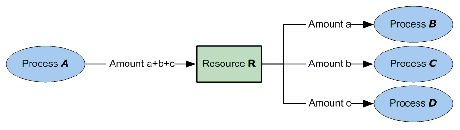
|
|
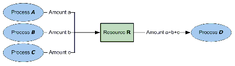
|

|
|
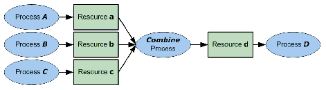
|
3.11 AuditPool and Audit
Audit Elements contain the post-facto recorded results of a Process such as the execution of a JDF Node or modification of the JDF itself. Audit Elements become static after a Process has been finished. They must not be modified after the Process has been aborted or completed. Therefore, if PhaseTime or ResourceAudit Audit Elements link to Resources, those Resources SHOULD be locked in order to inhibit accidental modification of audited information, which is why JDF includes a locking mechanism for Resources. Audit Elements record any event related to the following situations:
- The creation of a JDF Node by a Created Element.
- Spawning and merging, including Resource copying by spawned and merged Elements.
- Errors such as unnecessary ResourceLink Elements, wrongly linked Resources, missing Resources or missing links, which might be detected by Agents during a test run or by a Notification Element.
- Actual data about the production and Resource consumption by a ResourceAudit Element.
- Any Process phase times. Examples include setting up a Device, maintenance and washing, as well as down-times as a result of failure, breaks or pauses. Changes of Implementation Resource usage, such as a change of operators by a PhaseTime Element, would also constitute an example of a phase time.
- Actual Process scheduling data. For example, the Process start and end times, as well as the final Process state, as determined by a ProcessRun Element.
- Any modification of a JDF Node not covered by the preceding items, as recorded by a Modified or Deleted Element.
Audit information might be used by MIS for operations such as evaluation or invoicing. The Figure 3-14 depicts the structure of the AuditPool and concrete Elements, such as Modified , derived from the Abstract Audit Element. Audit entries are ordered chronologically, with the last entry in the AuditPool representing the newest. A ProcessRun Element containing the scheduling data finalizes each Process run. All subsequent entries belong to the next run.
3.11.1 AuditPool
The following table defines the contents of the AuditPool Element.
|
List of all Resources that are referenced from within the AuditPool . In JDF 1.2 and beyond, it is up to the implementation to maintain references. |
||
|
Audit * |
Chronologically ordered list of Audit Elements. The Audit Elements are Abstract and serve as placeholders for any concrete Element derived from the Abstract Audit Element. Audit Elements are described in the sections that follow. |
3.11.3 Abstract Audit
All Audit Elements inherit the content from the Abstract Audit Element, described in the following table.
|
The name of the Agent application that added the Audit Element to the AuditPool (and was responsible for the creation or modification). Both the company name and the product name may appear, and should be consistent between versions of the application. |
||
|
The version of the Agent application that added the Audit Element to the AuditPool (and was responsible for the creation or modification). The format of the version string may vary from one application to another, but should be consistent for an individual application. |
||
|
Text that identifies the person who made the entry. Prior to JDF 1.2, Author also contained information that is now encoded in AgentName and AgentVersion. Deprecation note: starting with JDF 1.4, use Employee . |
||
|
ID of the Audit . ID must be specified if there is support to subsequently create correction Audit Elements. |
||
|
QueueEntryID of the QueueEntry during which this Audit was generated. |
||
|
Reference to a previous Audit that this Audit corrects. The referenced Audit must reside in the same AuditPool . |
||
|
Text that identifies the spawned processing step when the entry was generated. This is a copy of the SpawnID Attribute of the root JDF Node of the Process that generates the Audit at the time the Audit is generated. |
||
|
For Audit Elements Created , Modified , Spawned , Merged and Notification , this Attribute records the date and time when the related event occurred. For Audit Elements PhaseTime , ProcessRun and ResourceAudit , the Attribute describes the time when the entry was appended to the AuditPool . |
||
|
Employee ? |
Employee who created this Audit Element. |
3.11.4 Audit
The following Elements are derived from the Abstract Audit Element:
|
Logs creation of JDF Node or Resource |
||
|
Logs deletion of JDF Node or Resource |
||
|
Logs modifications affecting a JDF Node or its Subelements when the modification is not covered by other Audit Elements |
||
|
Logs start and end times of any Process states and substates, denoted as phases. Phases can reflect any arbitrary subdivisions of a Process. |
||
|
Summarizes one complete execution run of a Node or delimits a group of Audit Elements for each individual Process run. |
||
|
Describes the usage of Resources during execution of a Node or the modification of the intended usage of a Resource |
||
3.11.4.1 Created
This Element allows the creation of a JDF Node or Resource to be logged. If the Element refers to a JDF Node, it can be located in the AuditPool Element of the Node that has been created or in any ancestor Node. If the Element refers to a Resource, it must be located in the Node where the Resource resides so that the spawning and merging mechanism can work effectively.
|
Represents the ID of the created Element. Defaults to the ID of the local JDF Node. Replaced with XPath in JDF 1.2 and beyond. |
||
|
Defines the template JDF that was used as the template to create the Node. |
||
|
Defines the version of template JDF that was used as the template to create the Node. |
||
|
Location of the created Elements or Attributes relative to the parent JDF Node of the Created Element. |
3.11.4.2 Deleted
This Element allows any deletions of a JDF Node or Element to be logged. If the corresponding Created Element was not deleted (e.g., in the AuditPool of a deleted JDF Node), the Deleted Element should reside in the same AuditPool as the corresponding Created Element, otherwise it should reside in an ancestor of the deleted Attribute or Element.
|
Location of the deleted Elements or Attributes relative to the parent JDF Node of the Deleted Element. |
3.11.4.3 Merged
This Element logs a merging event of a spawned Node. For more details, see Section 4.4, “Spawning and Merging”.
|
Declares that independent Jobs are merged into a Big Job for common production. If it is set to true , the Attributes jRefSource and rRefsOverwritten have no meaning and should be omitted. |
||
|
ID of the JDF Node that has been returned or merged. |
||
|
ID of the JDF Root Node of the Big Job from which the spawned structure has been returned. Note: the data type is NMTOKEN and not IDREF because the Attribute refers to an external ID. |
||
|
Copy of the SpawnID of the merged Node. Note that a Merged Element may also contain a SpawnID Attribute, which is the SpawnID of the Node that this Audit is being placed into prior to merging. |
||
|
Identifies the copied Resources that have been overwritten during merging. Resources are usually overwritten during return if they have been copied during spawning with read/write access. |
||
|
Locator that specifies the location of the merged Node prior to merging by the merging Process. |
||
|
Part * |
Specifies the selected parts of the Resource that were merged in case of parallel spawning and merging of Partitionable Resources. See Section 3.10.5, “Description of Partitioned Resources” . |
3.11.4.4 Modified
This Element allows any modifications affecting a JDF Node or its Subelements to be logged. Changes that can be logged by a more specialized Audit Element (e.g., ResourceAudit for Resource changes) must not use this common log entry. The modification can be described textually by adding a generic Comment Element to the Modified Element. The Modified Element must reside in the same AuditPool as the corresponding Created Element.
|
The ID of the modified Node. The Modified Element resides in the modified Node. Defaults to the ID of the local JDF Node. Replaced with XPath in JDF 1.2 and beyond. |
||
|
Location of the modified Elements or Attributes relative to the parent JDF Node of the Modified Element. |
3.11.4.5 Notification
This Element contains information about individual events that occurred during processing. For a detailed discussion of event properties, see Section 4.6, “Error Handling”.
|
Values are (in order of severity from lowest to highest) : Event - Indicates that a pure event due to certain operation-related activity has occurred, (e.g., Machine events, operator activities, etc.). This Class is used for the transfer of conventional event Messages. In case of Class = "Event" , further event information is to be provided by the Type Attribute and NotificationDetails Element. See Section C.3.2, “NotificationDetails”. Information - Any information about a Process which cannot be expressed by the other Classes (e.g., the beginning of execution).. No user interaction is needed. Warning - Indicates that a minor error has occurred, and an automatic fix was applied. Execution continues. The Node’s Status is unchanged. This appears in situations such as A4-Letter substitutions when toner is low or when unknown extensions are encountered in a required Resource Error - Indicates that an error has occurred that requires user interaction. Execution cannot continue until the problem has been fixed. The Node’s Status is Stopped . This value appears in situations such as when Resources are missing, when major incompatibilities are detected, or when the toner is empty. Fatal - Indicates that a fatal error led to abortion of the Process. The Node’s Status is Aborted . This value is seen with most protocol errors or when major Device malfunction has occurred. |
||
|
CombinedProcessIndex Attribute specifies the indices of individual Processes in the Types Attribute to which a Notification in a Combined Process Node or Process Group Node belongs. Multiple entries in CombinedProcessIndex specify that the Module specified by Notification is executing the respective multiple Processes in the Combined Process Node. |
||
|
JobID that this Notification applies to. JobID must not be specified when Notification is used as an Audit Element. Notification /@ JobID may be specified within a JMF Message. |
||
|
JobPartID that this Notification applies to. JobPartID must not be specified when Notification is used as an Audit Element. Notification /@ JobPartID may be specified within a JMF Message. |
||
|
ModuleID of the Module that this Notification relates to. |
||
|
0-based indices of the module or modules. The list is based on all modules of the Device. If multiple module types are available on one Device, each must be unique in the scope of the Device. Constraint: At least one of ModuleID or ModuleIndex must be specified. |
||
|
Values include those from: Section C.2, “ModuleType Supported Strings” . Note: the allowed values depend on the type of Device. Each type of Device has a separate table of values. |
||
|
Identifies the type of notification. Also defines the name of the Abstract NotificationDetails Element. Note: Type allows parsers that do not have access to the schema to find the instance of NotificationDetails . Values include those from: Table C-11, “List of NotificationDetail Elements” . |
||
|
Comment * |
A Comment Element contains a verbose, human-readable description of the event. If the value of the Class Attribute is one of Information , Warning , Error or Fatal , at least one Comment Element should be specified. Otherwise (including for Class = "Event") , Comment Elements are optional . |
|
|
Employee * |
||
|
NotificationDetails is an Abstract Element that is a placeholder for additional structured information. It provides additional information beyond the Class and Type Attribute and beyond the Comment Element. For derived Elements see Table C-11, “List of NotificationDetail Elements” . |
||
|
Part * |
Describes which parts of a Process this Notification belongs to. If Part is not specified for a Notification , it refers to all parts. For example, imagine a print Job that is to produce three different Sheets. All Sheets are described by one Partitioned Resource. The Part Elements define, unambiguously, the Sheet to which the Audit refers. |
3.11.4.6 PhaseTime
This Element contains audit information about the start and end times of any Process states and substates, denoted as phases. Phases can reflect any arbitrary subdivisions of a Process, such as maintenance, washing, plate changing, failures and breaks.
PhaseTime Elements may also be used to log the actual time spans when Implementation Resource s are used by a Process. For example, the temporary usage of a fork lift can be logged if a PhaseTime Element is added that contains a link to the fork lift Device Resource and specifies the actual start and end time of the usage of that fork lift.
PhaseTime Elements that apply to identical Partitions and contain at least one identical ModulePhase must not overlap in time. PhaseTime Elements that apply to different Partitions may overlap in time in order to indicate parallel processing. PhaseTime Elements that apply to different modules MAY overlap in time in order to indicate independent processing with individual modules.
|
Date and time of the end of the phase. If not specified, the PhaseTime is ongoing and the end of the phase has not yet occurred. This will generally be the case in the last PhaseTime of a snapshot JDF in a Status JMF. See Section 5.9.9, “Status” for details., |
||
|
Values are (a subset of JDF /@Status) : Spawned - Deprecated in JDF 1.3 Note: The values of this Status Attribute are a subset of the possible state values JDF /@ Status . For all possible states of a JDF Node see Table 3-5, “JDF Node”. The remaining set of states, i.e., Ready , FailedTestRun , Aborted and Completed , are end states and are specified in ProcessRun / @EndStatus . |
||
|
Description of the status phase that provides details beyond the enumerative values given by the Status Attribute. Values include those from: Section C.1, “StatusDetails Supported Strings” . |
||
|
Device * |
Links to Device Resources that are working during this phase. If one or more Device Resource(s) was used during this phase, this refelement should link to that/those Device Resource(s) |
|
|
Employee * |
Links to Employee Resources that are working during this phase. If one or more Employee Resource(s) was active during this phase, this refelement should link to that/those Employee Resource(s). |
|
|
Definition how the costs for the execution of this PhaseTime are to be charged. |
||
|
Additional phase information of individual Device modules, such as print units. |
||
|
Part * |
Describes which parts of a Job is currently being logged. If a Part is not specified for a Node that modifies Partitioned Resources, PhaseTime refers to all parts. For example, imagine a print Job that is to produce three different Sheets. All Sheets are described by one Partitioned Resource. In order to separate the different print phases for each Sheet, the Part Elements define, unambiguously, the Sheet to which the Audit refers. |
|
|
These ResourceLink Elements specify the actual consumption/usage or production of Resources during this production phase. All Attributes apply to production and consumption within this PhaseTime only, thus ResourceLink / @ActualAmount specifies the actual amount produced or consumed. |
3.11.4.6.1 ModulePhase
It is possible to monitor the states of individual modules of a complex Device, such as a press with multiple print units, by defining ModulePhase Elements. One PhaseTime Element may contain multiple ModulePhase Elements and can, therefore, record the status of multiple units in a Device. ModulePhase Elements describe the set of modules that a given PhaseTime Audit Element applies to. ModulePhase Elements are defined in the following table.
|
CombinedProcessIndex Attribute specifies the indices of individual Processes in the Types Attribute to which a ModulePhase in a Combined Process Node or Process Group Node belongs. Multiple entries in CombinedProcessIndex specify that the Module specified by ModulePhase is executing the respective multiple Processes in the Combined Process Node. |
||
|
ID of the Device that the module described by this ModulePhase belongs to. This must be the DeviceID Attribute of one of the Device Elements specified in the PhaseTime . |
||
|
Unknown . - The module status is unknown. Idle - The module is not used, (e.g., a color print module that is inactive during a black-and-white print). Down - The module cannot be used. It might be broken, switched off etc. Setup - The module is currently being set up. Running - The module is currently executing. Cleanup - The module is currently being cleaned. Stopped - The module has been stopped, but running might be resumed later. This status can indicate any kind of break, including a pause, maintenance or a breakdown, as long as running can be easy resumed. Note: these states are analog to the Device states of Table 5-72, “ModuleStatus Element”. |
||
|
Date and time of the end of the module phase. If not specified, the ModulePhase is ongoing and the end of the phase has not yet occurred. Deprecation note: starting with JDF 1.4, all Status information is recorded in PhaseTime . ModulePhase selects only the set of modules that a particular PhaseTime applies to. |
||
|
ModuleID of the Module that this ModulePhase refers to. If not specified, the module is specified in ModuleIndex . Constraint: at least one of ModuleID or ModuleIndex must be specified. |
||
|
0-based indices of the module or modules. The list is based on all modules of the Device. If multiple module types are available on one Device, each must be unique in the scope of the Device. Constraint: At least one of ModuleID or ModuleIndex must be specified. |
||
|
Values include those from: Section C.2, “ModuleType Supported Strings” . Note: the allowed values depend on the type of Device. Each type of Device has a separate table of values. |
||
|
Date and time of the beginning of the module phase. Deprecation note: starting with JDF 1.4, all Status information is recorded in PhaseTime . ModulePhase selects only the set of modules that a particular PhaseTime applies to. |
||
|
Description of the module status phase that provides details beyond the enumerative values given by the DeviceStatus Attribute.. Values include those from: Section C.1, “StatusDetails Supported Strings” . |
||
|
Employee * |
References to Employee Resources that are working during this module phase on this module. (The module is specified by the Attributes ModuleIndex and ModuleType ). |
3.11.4.7 ProcessRun
This Element serves two related functions.
The first function is to summarize one complete execution run of a Node. It contains Attributes that record the date and time of the start, the end time, the final Process state when the run is finished and, possibly, the Process duration of the Process run. These Attributes are described in Table 3-41.
The second function is to delimit a group of Audit Elements for each individual Process run. Every group of Audit Elements terminates with a ProcessRun Element, which contains the information described in Table 3-41. If a Process is repeated (e.g., as a result of a late change in the order), all Audit Elements belonging to the new run must be appended after the last ProcessRun Element that terminates the Audit Elements of the previous run. The number of ProcessRun Elements is, therefore, always equivalent to the number of Process runs. If a Node describes Partitioned Resources, one ProcessRun may be specified for each individual part.
|
Time span of the effective Process runtime without intentional or unintentional breaks. That time span is the sum of all Process phases when the Status is InProgress , Setup or Cleanup . |
||
|
The Status of the Process at the end of the run. For a description of Process states, see Table 3-5, “JDF Node”. Stopped .- The execution of the Node is stopped and might commence at a later time. In JDF 1.3 and beyond, Stopped is not an end state. Deprecated in JDF 1.3 |
||
|
Date and Time of the ReturnQueueEntry submission. If the JDF was returned via a Hot Folder, this corresponds to the time when the JDF was placed into the Hot Folder. |
||
|
Date and Time of the SubmitQueueEntry submission. This value SHOULD be identical with QueueEntry /@ SubmissionTime . If the JDF was submitted via a Hot Folder, this time corresponds to the time when the JDF was extracted from the Hot Folder. |
||
|
Part * |
Describes which parts of a Process this ProcessRun belongs to. If Part is not specified for a ProcessRun , it refers to all parts. For example, imagine a print Job that is to produce three different Sheets. All Sheets are described by one Partitioned Resource. The Part Elements define, unambiguously, the processing of the Sheet to which the ProcessRun refers. |
3.11.4.8 ResourceAudit
The ResourceAudit Element describes the usage of Resources during execution of a Node or the modification of the intended usage of a Resource, (i.e., the modification of a ResourceLink ) It logs consumption and production amounts of any quantifiable Resources, accumulated over one Process run or one part of a Process run. It contains one or two Abstract ResourceLink Elements. The first is required and specifies the actual consumption/usage or production of the Resource. The second ResourceLink is optional and used to store information about the original ResourceLink , which also refers to the original Resource. If the original Resource does not need to be saved, a Boolean ContentsModified Attribute in the ResourceAudit should be specified as "true" to indicate that a change has been made.
|
Specifies that a modification has occurred but that the original Resource has been deleted. |
||
|
OperatorInput - Human update that corrects inconsistencies from automated data collection. PlanChange - The Resource was modified due to a change of plan before actual processing. |
||
|
Status of the node that was executed during production or consumption of the resource. Values are (a subset of JDF /@Status) : Note: The values of this Status Attribute are a subset of the possible state values JDF /@ Status . For all possible states of a JDF Node see Table 3-5, “JDF Node”. The remaining set of states, i.e., Ready , FailedTestRun , Aborted and Completed , are end states and are specified in ProcessRun / @EndStatus . |
||
|
Specifies how the costs associated with this ResourceAudit are to be charged. |
||
|
Part * |
Describes which parts of a job is currently being logged. If a Part is not specified for a node that modifies partitioned resources, ResourceAudit refers to all parts. |
|
|
The first ResourceLink specifies the actual consumption/usage or production of a Resource. This current Resource after modification NEED NOT be set to @Locked = "true" . |
||
|
The second ResourceLink , which is optional , logs the modification of a ResourceLink and the modification of the Resource it refers to. It holds the planned ResourceLink which also refers to the planned Resource. The planned and actual Resource may be the same. |
For details on ResourceLink Elements and ResourceLink Subclasses, see Section 3.9, “ResourceLinkPool and ResourceLink”. The Partitioning of Resources using Part Elements is defined in Section 3.10.5, “Description of Partitioned Resources” .
3.11.4.8.1 Logging Machine Data by Using the ResourceAudit
If a Resource is modified during processing, any Nodes that also reference the Resource may also be affected. The following logging procedure is recommended in order to track the Resource modification and to insure consistency of the Job.
- 1 Create a copy of the original Resource with a new ID.
- 2 Modify the original Resource to reflect the changes.
- 3 Insert a ResourceAudit Element that references the modified original Resource with the first ResourceLink and the copied Resource with the second ResourceLink Attribute.
Example 3-35: ResourceAudit: Before Logging
The following example describes the logging of a modification of the media weight and amount. The JDF document before modification requests 400 copies of 80 gram media.
< JDF xmlns = "http://www.CIP4.org/JDFSchema_1_1" ID = "J1" Status = "Waiting"
Type = "ConventionalPrinting" JobPartID = "ID234" Version = "1.4" >
< MediaLink Amount = "400" Usage = "Input" rRef = "RLink" />
< ConventionalPrintingParamsLink Usage = "Input" rRef = "R01" />
< ComponentLink Usage = "Output" rRef = "R02" />
< Media ID = "RLink" Class = "Consumable" Status = "Available"
Amount = "400" Weight = "80" />
< ConventionalPrintingParams ID = "R01" Class = "Parameter" Status = "Available" />
< Component ID = "R02" Class = "Quantity" Status = "Unavailable"
Example 3-36: ResourceAudit: Logging of Consumption
The JDF after modification specifies that 421 copies of 90-gram media have been consumed.
< JDF xmlns = "http://www.CIP4.org/JDFSchema_1_1" ID = "J1" Status = "Waiting"
Type = "ConventionalPrinting" JobPartID = "ID234" Version = "1.4" >
<!-- Note that ActualAmount has been added to the ResourceLink -->
< MediaLink ActualAmount = "421" Amount = "400" Usage = "Input" rRef = "RLink" />
< ConventionalPrintingParamsLink Usage = "Input" rRef = "R01" />
< ComponentLink Usage = "Output" rRef = "R02" />
< Media ID = "RPrev" Class = "Consumable" Status = "Available" Amount = "400"
<!--Copy of the original resource-->
< Media ID = "RLink" Class = "Consumable" Status = "Available" Amount = "421"
< ConventionalPrintingParams ID = "R01" Class = "Parameter" Status = "Available" />
< Component ID = "R02" Class = "Quantity" Status = "Unavailable"
< ResourceAudit TimeStamp = "2008-08-28T18:20:00Z" >
< MediaLink ActualAmount = "421" Amount = "400" Usage = "Input" rRef = "RLink" />
< MediaLink Amount = "400" Usage = "Input" rRef = "RPrev" />
3.11.4.8.2 Logging Changes in Product Descriptions by Using the ResourceAudit
ResourceAudit Elements may also be used to store the original Intent Resource s of a product specification in a change order or request for requote. The mechanism is the same as above.
Example 3-37: ResourceAudit: Logging Changes
The following example shows the structure of a MediaIntent with Option Partitions, where a late change of options from Option1 (80 gram paper) to Option2 (90 gram paper) is requested.
< JDF xmlns = "http://www.CIP4.org/JDFSchema_1_1" ID = "J1" Status = "Waiting"
Type = "Product" JobPartID = "ID234" Version = "1.4" >
< MediaIntentLink Usage = "Input" rRef = "id" >
< ComponentLink Usage = "Output" rRef = "R02" />
< MediaIntent ID = "id" PartIDKeys = "Option" >
<!-- the common MediaIntent resource details -->
< MediaIntent Option = "Option1" >
< Weight Preferred = "80" DataType = "NumberSpan" />
< MediaIntent Option = "Option2" >
< Weight Preferred = "90" DataType = "NumberSpan" />
< Component ID = "R02" Class = "Quantity" Status = "Unavailable"
<!-- the actual MediaIntent ResourceLink -->
< MediaIntentLink Usage = "Input" rRef = "id" >
<!-- the original MediaIntent ResourceLink -->
< MediaIntentLink Usage = "Input" rRef = "id" >
3.11.4.9 Spawned
This Element allows a Node that has been spawned to be logged in the AuditPool of the parent Node of the spawned Node or in the AuditPool of the Node that has been spawned in case of spawning of individual Partitions. For details about spawning and merging, see Section 4.4, “Spawning and Merging”.
|
Declares that independent Jobs that have previously been merged into a Big Job are spawned. If it is set to true , the Attributes jRefDestination , rRefsROCopied and rRefsRWCopied have no meaning and should be omitted. |
||
|
ID of the JDF Node that has been spawned. |
||
|
ID of the JDF Node to which the Job has been spawned. This Attribute must be specified in the parent of the original Node if independent Jobs are spawned. Note: the data type is NMTOKEN and not IDREF because the Attribute refers to an external ID. |
||
|
Copy of the SpawnID of the newly spawned Node. Note that a Spawned Audit may also contain a SpawnID Attribute, which is the SpawnID of the Node that this Audit is being placed into prior to spawning. |
||
|
List of IDs separated by whitespace. Identifies the Resources copied to the ResourcePool Element of the spawned JDF during spawning. These Resources should not be modified by the spawned JDF . |
||
|
List of IDs separated by white spaces. Identifies the Resources copied to the ResourcePool Element of the spawned JDF during spawning. These Resources may be modified by the spawned JDF and must be copied back into their original location by the merging Agent. Resource copying is required if Resources are referenced simultaneously from spawned Nodes and from Nodes in the original JDF document. |
||
|
Status ? |
Status of the spawned Node at the time of spawning. . Values are from : JDF /@ Status (Table 3-5, “JDF Node”). |
|
|
Locator that specifies the location where the spawned Node was stored by the spawning Process. |
||
|
Part * |
Identifies the parts that were selected for spawning in case of parallel spawning of Partitionable Resources. See Section 3.10.5, “Description of Partitioned Resources” . |
3.12 JDF Extensibility
JDF is meant to be flexible and therefore useful to any vendor, as each vendor will have specific data to include in the JDF files. JDF is able to provide this kind of versatility by using the XML namespaces. This section describes how JDF uses the XML extension mechanisms.
3.12.1 Namespaces in XML 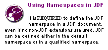
JDF Extensibility is implemented using XML Namespaces [XMLNS] . XML namespaces are defined by xmlns Attributes. A general example is provided below.
Namespaces are inserted in front of Attribute and Element names. The associated namespace of Element names with no prefix is the default namespace defined by the xmlns Attribute. The associated namespace of Attributes with no prefix is that one of the Element (see Section A.3.3, “Defined JDF enumeration Data Types”). All namespace prefixes must be declared using the standard xmlns :prefix Attribute declarations.
Example 3-38: Namespaces in XML
The example illustrates how private namespaces are declared and used to extend an existing JDF Resource by adding private Attributes and a private Element.
< JDF xmlns = "http://www.CIP4.org/JDFSchema_1_1"
xmlns:foo = "fooschema URI" ID = "ID1" Status = "Ready"
JobPartID = "ID345" Version = "1.4" >
< SomeJDFDefinedResource name = "abc" foo:specialname = "cba" >
< foo:PrivateStuff type = "" />
3.12.1.1 JDF Namespace
The official namespace URI for JDF Version 1.0 is: http://www.CIP4.org/JDFSchema_1 . The official namespace URI for JDF Version 1.1 through JDF 1.X is: http://www.CIP4.org/JDFSchema_1_1 . It is strongly recommended to use either the default namespace with no prefix or a prefix of “jdf” as the JDF namespace prefix.
3.12.1.2 JDF Extension Namespace
CIP4 defines an extension namespace where new features that are anticipated to be included in a future version of the specification are defined. The official extension namespace URI for JDF Version 1.x is: http://www.CIP4.org/JDFSchema_1_1_X . It is strongly recommended to use a prefix of “ jdfx ” as the JDF extension namespace prefix.
3.12.2 Extending Process Types
JDF defines a basic set of Process types. However, because JDF allows flexible encoding, this list, by definition, will not be complete. Vendors that have specific Processes that do not fit in the general JDF Processes and that are not combinations of individual JDF Processes (see Section 3.3.3, “Combined Process Nodes”) can create JDF Process Nodes of their own type. Then the content of the Type Attribute may be specified with a prefix that identifies the organization. The prefix and name must be separated by a single colon (:) as shown in the following example.
Example 3-39: Extending Process Types
< JDF Type = "myCompaniesNS:MyVeryImportantProcess"
xmlns = "http://www.CIP4.org/JDFSchema_1_1"
xmlns:myCompaniesNS = "my companies namespace URI"
ID = "ID1" JobPartID = "ID345" Status = "Ready" Version = "1.4" >
3.12.2.1 Rules about Process Extension
The use of namespace prefixes in the Type Attribute is for extensions only. Standard JDF Process types must be specified without a prefix in the Type Attribute or the Types Attribute of a Combined Process Node. If a Process is simply an extension of an existing Process, it is possible to describe the private data by extending the existing Resource types. This is described in greater detail in the sections below.
3.12.3 Extending the NodeInfo and CustomerInfo Nodes
Extending the NodeInfo and CustomerInfo Nodes is achieved in a manner analogous to the extension of Resources, which is described below. On the other hand, extending the direct contents of JDF Nodes by adding new Elements or Attributes is discouraged.
3.12.4 Extending Existing Resources
All Resources defined by JDF may be extended by adding Attributes and Elements using one’s own namespace for these Resource extensions. This is useful when the predefined Resource types need only a small amount of private data added, or if those Resources are the only appropriate place to put the data. The JDF namespace of the extended Resource must not be modified. However, the mechanism for creating new Resources in a separate namespace is provided in the next section.
However, duplicate functionality must not be added to these Resource types. JDF-defined Attributes and Elements must be used where possible and may be extended with additional information only when JDF-defined constructs don’t exist. For example, it is not allowed to extend the RIP Resource that controls the bits per colorant with a foo:ColorantDepth or foo:ColDepth Attribute that overrides the JDF defined parameter for bits per colorant (see RenderingParams /@ ColorantDepth in Section 7.2.156, “RenderingParams”).
3.12.5 Extending NMTOKEN Lists
Many Resources contain Attributes of type NMTOKEN and some of these have a set of predefined, suggested enumerative values. These lists may be extended with private keywords. In order to identify private keywords, it is strongly recommended to prefix these keywords with a namespace-like syntax, (i.e., a namespace prefix separated by a single colon “:”). Such a namespace prefix should be defined in the JDF ticket with the standard xmlns:Prefix=“someURI ” notation, even if no extension Elements or Attributes from that namespace occur in the JDF ticket. Implementations that find an unknown NMTOKEN prefixed by a namespace prefix may then attempt to use the default value of that Attribute if the value of SettingsPolicy in effect is BestEffort .
Example 3-40: Extending NMTOKEN Lists
For instance, if an implementation encounters TrappingParams /@ TrapEndStyle (see below in Table 3-44) in the JDF snippet shown below, and if the implementation does not support the " HDM " extension, the best assumption is to use TrapEndStyle = " Miter ", which is the default for TrapEndStyle .
< TrappingParams TrapEndStyle = "HDM:FooBar" />
|
Instructs the trap engine how to form the end of a trap that touches another object. Note: other values might be added later as a result of customer requests. |
3.12.6 Creating New Resources
There are certain Process implementations that have functionality that cannot be specified by the predefined Resource types. In these cases, it might be necessary to create a new Resource-type Element. If so, the Resource must be clearly specified and use its own namespace. These Resource types must only be linked to custom-type JDF Process Nodes.
3.12.7 Future JDF Extensions
In future versions, certain private extensions will become more widely used, even by different vendors. As private extensions become more of a general rule, those extensions will be candidates for inclusion in the next version of the JDF specification. At that time the specific extensions will have to be described and will be included into the JDF namespace.
3.12.8 Maintaining Extensions
Given the mix of vendors that will use JDF, it is likely that there will be a number of private extensions. Therefore, JDF Controllers must be prepared to receive JDF files that have extensions. These Controllers should ignore all extensions they don’t understand, but under no circumstance are they allowed to remove these extensions when making modifications to the JDF. If they do, it will break the extensibility mechanism. For example, imagine that JDF Agent A creates a JDF and inserts private information for Process P. Furthermore, the information is only understood by Agent A and the appropriate Device D for executing P. If the JDF needs to be processed first by another Agent/Device C and that Process removes all private data for P , Process P will not be able to produce the correct results on Device D that were specified by Agent A.
3.12.9 Processing Unknown Extensions
If a Node is processed by a Controller or Device and it encounters an unknown extension in one of its Input Resources, the expected behavior depends on the current value of SettingsPolicy .
If SettingsPolicy = "BestEffort" , a Notification Audit Element with Class = "Warning" should be logged.
If SettingsPolicy = "MustHonor" , the Process must not continue and a Notification Audit Element with Class = "Error" should be logged.
If SettingsPolicy = "OperatorIntervention" , the Process must stop and wait for an operator intervention and a Notification Audit Element with Class = "Warning" should be logged.
3.12.10 Derivation of Types in XML Schema
The XML Schema definition http://www.w3.org/TR/xmlschema-1/ describes a mechanism to create new types by derivation from old types. This is an alternative to extend or create new Elements and is described in Section 4 of http://www.w3.org/TR/xmlschema-0/ . This mechanism is not allowed to be applied to any Elements defined by JDF because such new Element types can only be understood by Agents/Devices that know the extension. The use of the derivation mechanism is allowed only for private extensions.
3.13 JDF Versioning
The JDF Specification is an evolving document that exists in multiple versions. Real workflows will be executed by Devices that individually support different versions of the specification. Complete JDF workflow descriptions may therefore contain sub- JDF Nodes that must be specified with different versions in one document.
3.13.1 JDF Versioning Requirements
The following list of requirements take the specific needs of a mixed version JDF workflow into account:
- JDF Documents with mixed versions must be supported.
- Environments with Devices that support different JDF versions will exist.
- It is not feasible to enforce simultaneous software upgrades for Devices from multiple vendors in one production facility.
- MIS systems might not support all versions of all Devices that are described in the JDF.
- Archived JDF documents must remain valid when a new version of the JDF specification and schema is published.
3.13.2 JDF Version Definition
The version of a JDF Node is defined as the highest version of all Attributes or Elements and linked Resources. The version of a Resource is defined as the highest version of all Elements, Attributes or Resources that are referenced via refelements.
3.13.3 JDF Version Policies
The following specifies the policies for evolving JDF 1.x versions. When the term “JDF” is used in the remainder of this section the reader also ought to interpret these policies to apply to JMF as well. Version policies include three areas of application: JDF specification rules, JDF schema definition rules and JDF application behavior. The policies are applicable to the transition from JDF 1.1/1.1A through to JDF 1.4, as well as future versions of JDF, but are not applicable to JDF 1.0.
3.13.3.1 JDF Specification Version Policies
The following list defines the policies that will be followed when extending the JDF specification.
- Changes to the JDF specification are always backwards compatible.
- Extension Elements or Attributes are never required.
- New Attributes in existing Elements must be optional.
- New Elements in existing Elements must be optional.
- New Elements may contain required Elements or Attributes.
- Elements and Attributes are never removed.
- Data type changes must be extensions of existing data types. In other words the data type of an extended Attribute must be a complete superset of the existing data type. For instance, only the extensions defined by the arrow directions are valid.
- The JDF /@ Version and JMF /@ Version Attributes are required in the respective root of JDF or JMF Instance Documents.
- The semantics of Attributes and Elements must not be altered.
- New Attributes or Elements must not be introduced that conditionally modify the semantics of existing Attributes and Elements.
- Semantics may only be altered when the previous definition is clearly wrong and the result is unpredictable with the previous definition, (e.g., bug fixes in the specification). These changes must be clearly marked in the specification.
- The default values of Attributes and Elements must NOT be altered.
3.13.3.2 JDF Schema Version Policies
The following list defines the policies that will be followed when generating new schemas for new versions of the JDF specification.
- Changes to the JDF schema must always be backwards compatible.
- Only one JDF schema namespace must be defined for all versions of JDF 1.x .
- The xs: version Attribute must BE defined in the schema.
- Applications that read a schema may verify that they are compatible with the version of the schema.
- Applications may choose a schema based on the schema's version tag.
- The schema version selection may be based on a best match to both application and JDF ticket or even JDF Node.
- The JDF /@ Version Attribute is defined as an enumeration that contains all valid versions for the schema, (e.g. "1.1", "1.2" and "1.3" for the JDF 1.3 version of the schema). The schema data type of a JDF of JMF version is JDFJMFVersion .
- The version annotations in the schema should be maintained wherever possible.
- Explicit copies of published legacy schema versions must be available on the CIP4 website.
- The schema default values of deprecated Attributes must be removed from the schema. Deprecated Attributes must still be valid but must not be explicitly defaulted in the schema.
3.13.3.3 JDF Application Version Policies
This section specifies the policies that implementations should follow in order to support multiple versions of JDF. The policies are specified for Agents and Controllers/Devices separately.
3.13.3.3.1 JDF Agent Version Policies
JDF Agents must ensure that the JDF that they generate is consistently versioned.
- An Agent must update the JDF /@ Version Attribute when inserting new Attributes or Elements.
- If an Agent is not aware of versions, it must assume that anything that it writes belongs to the Agent's maximum version. In this case, the Version of any Node that is affected is the maximum of its prior version or the Agent's version.
- It is strongly recommended that an Agent honor the JDF /@ MaxVersion Attribute.
- An Agent should not add Attributes, Elements or Attribute Values that were introduced in a version that is higher than JDF /@ MaxVersion .
- An Agent should insert the lowest possible JDF /@ Version Attribute that is applicable to the Nodes version as described in Section 3.13.2, “JDF Version Definition”.
- The JDF /@ Version of a spawned JDF Node is identical to the JDF /@ Version of that Node in a complete JDF.
3.13.3.3.2 JDF Device/Controller Version Policies
A JDF Device/Controller, (i.e., any implementation that reads JDF), should be backwards compatible:
JDF Devices/Controllers, (i.e., any implementation that reads JDF) should attempt to be forwards compatible.
- Schema validation errors that find an unknown Attribute, Element or Attribute Value in a JDF with a version that is higher than the schema should not lead to an abort.
- A Device or Controller that reads a JDF with an Element or Attribute or Attribute Value with a version that is higher than the version that it was developed for should attempt to execute the JDF if SettingsPolicy = "BestEffort" .
- A Device or Controller that reads a JDF with an Element or Attribute or Attribute Value with a version that is higher than the version that it was developed for must not execute the JDF if SettingsPolicy = "MustHonor" .
- Implementations should handle non-fatal version schema validation errors gracefully.
- Unknown Attributes/Elements in the JDF namespace should be treated the same as foreign namespace Attributes/Elements when handling Nodes that are not executed by the Device or Controller.
- Unknown versions of the JDF namespace should be treated analog to foreign namespace Elements when handling Nodes that are not executed by the Device or Controller.